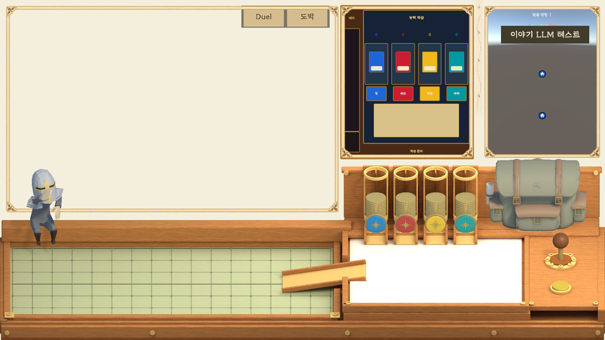
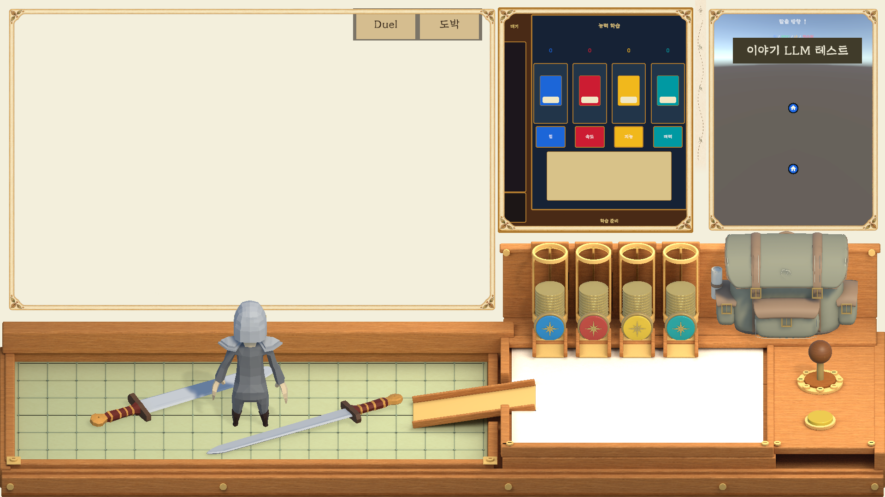

실제 게임 연결·최신 Inspector·검증 결과: 통합 보고서
학습 자판기 3D 에셋 초안
작업일: 2026-11-04 (Asia/Seoul). 사용자가 표시한 본체·왼쪽 학습 적층부·왼쪽 배출구와 받는 통을 실제 3D 메시로 제작했다. 아래 네 개 동전통은 제외했다.
Unity 에셋 패키지 · 실제 Unity 렌더 미리보기 · 검증 기록
| 단계 | 작업 | 상태 |
|---|
| 1 | 요청 범위와 프로젝트 확인 | 완료: Unity 6000.3.12f1 / URP |
| 2 | 본체·적층칸·배출구·개별 오브젝트 제작 | 완료 |
| 3 | 프리팹·배출 시연·패키지 제작 | 완료 |
| 4 | 렌더 및 참조·정렬·애니메이션 검사 | 완료. 다른 프로젝트에서의 새 가져오기는 미실시 |
사용 방법
.unitypackage를 Unity에서 가져온 뒤 Assets/AiAsset/LearningDispenserPrototype/Prefabs/LearningDispenser_Static.prefab을 배치한다. 앞면은 로컬 -Z 방향이다. 전체 루트 Scale을 게임 카메라에 맞게 줄여 사용한다. 본체 약 5.1 × 5.5 유닛, 왼쪽 배출부가 아래로 약 1.95 유닛 이어진다. 재질은 URP Lit 기반이다.
LearningDispenser_AnimatedDemo.prefab 또는 LearningDispenser_Demo.unity에서는 Play 시 간단한 배출 반복 동작을 볼 수 있다. Legacy Animation 클립을 사용한다. 실제 입력·학습 일정·코인 차감 로직은 이번 외형 에셋 범위에 포함하지 않는다.
구조와 수정
01_WoodCabinet은 본체, 02_ScheduledStack은 얇은 물체 39개가 쌓인 왼쪽 칸, 03_Column_*는 각 색상별 상단 코인·진열칸·누름 버튼, 04_LeftDispenser는 배출구·낙하 물체·받는 통이다. 각 부품은 독립 자식 오브젝트이며 버튼에는 별도 Collider가 있다. 버튼·코인·네 색 학습 책·얇은 적층 타일을 개별 프리팹으로 제공한다.
재현용 빌더가 메시·재질·프리팹·시연 씬·패키지를 만든다. Unity Pipeline의 run_script로 LearningDispenserBuilder.Build를 실행한다. 검증 진입점은 LearningDispenserBuilder.Validate다. 이미 출력 폴더가 있으면 재모델링하지 않고 프리뷰·패키지 완성을 재개한다. 새 모델 버전을 만들려면 Root와 출력 경로를 별도 이름으로 변경한다.
확인 결과와 한계
실행 중인 Unity 에디터에서 C# 컴파일 및 생성 성공. 185개 MeshRenderer의 재질과 영구 메시 참조를 검사했다. 네 열의 코인·진열칸·버튼 X축 일치를 검사했다. 배출 클립을 두 시점에 샘플링해 낙하 이동을 확인했다. 격리된 프리뷰 씬에서 1000×1400 이미지를 렌더링하고 시각 확인했다. unitypackage의 gzip/tar 디렉터리 구조를 확인했다.
별도 새 프로젝트로 패키지를 다시 가져오는 시험 및 실제 Play 진행 프레임 검사는 하지 않았다. 배출 동작은 클립 샘플 검사까지 완료했다. 단순한 로우폴리 초안이며 참고 이미지와 같은 완성도의 조각·텍스처는 구현하지 않았다. 기존 게임 씬을 저장하거나 게임 소스를 수정하지 않았다. 제작을 위해 Play를 한 번 종료했으며 검증 시 다시 Play 중인 것이 확인되어 해당 세션을 유지했다.
현황·다음 작업·임시 코드
패키지 제공 완료. 다음 작업은 사용자 게임 화면에서 크기·카메라 각도 검토 및 필요 시 기능 연결이다. 일회성 임시 코드는 없다. 빌더는 재현·수정에 필요한 유지 도구다. 출력 패키지와 미리보기는 기존 .gitignore의 output 규칙에 따라 로컬 배포물로 관리하고, 원본 Assets·빌더·이 보고서는 Git 포함 대상임을 확인했다. 기존 보고서 개발 원칙 스킬 보고서는 보존했다.

기사 캐릭터 책상 내려오기 애니메이션 정리
작업일: 2026-11-04 14:11 (Asia/Seoul). 목표: development-principles에 따라 이 채팅에서 만든 애니메이션의 필수 파일·재생성 도구를 보존하고, 오래된 출력과 Git 제외 규칙 및 실행·수정 안내를 정리한다. 위 자판기 작업 기록은 보존했다.
| 단계 | 주요 작업 | 확인 방법 | 상태 |
|---|
| 1 | 원본·최종 결과·유지 도구 구분, 오래된 출력 정리 | 이 채팅의 생성 목록과 Git 상태 대조 | 완료 |
| 2 | 안내서 포함, 재생성 출력 제외 | git check-ignore 및 git status | 완료: 안내서 예외와 생성물 제외 확인 |
| 3 | 현재 폴더에서 누락된 FBX 재생성 및 전체 프레임 검사 | Blender FBX 재불러오기 | 완료: 30fps·1~50프레임 통과 |
| 4 | 기존 HTML 보고서와 사용 안내 갱신 | UTF-8·관련 상대 링크 확인 | 완료: 정적 문서 검사, 브라우저 화면 검사는 미실시 |
사용할 파일과 현재 현황
Unity로 가져올 파일은 Knight_DeskDismount.fbx다. Blender 편집 원본도 함께 보존한다. 앉은 상태 → 책상에서 내려오기 → 착지 → 일어서기만 들어 있으며, 12개 기준 자세를 30fps·1~50프레임(약 1.67초)에 배치했다. 앉으러 접근하거나 다시 올라가는 동작은 없다.
전체 게임 실행과 인계에 관한 기존 문서는 Docs/PC_HANDOFF.md이며 이 작업에서는 수정하지 않았다. 애니메이션 실행·수정 방법은 기존 사용 안내서를 갱신했다. 이 안내서는 광범위한 Markdown 제외 규칙의 좁은 예외로 Git에 포함한다. 기존 게임 씬·Animator·사용자 파일 및 무관한 Git 변경은 건드리지 않았다. 커밋·푸시·스테이징은 수행하지 않는다.
핵심 구조와 변경 이유
- 기존 리깅 원본: 모델·재질·HumanArmature 원본. 최초로 제공된 Standing FBX에는 뼈대가 없어 이 원본으로 제작했다.
- create_desk_dismount.py:
keys에 12개 자세, tangent에 연속 속도 보간, limb에 고정 길이 도달 계산을 둔다. 발을 닿지 않는 목표 위치로 강제 이동하지 않고 실제 발목 관절에 붙여 부츠 변형을 방지했다. -- --skip-stills로 PNG 렌더 없이 최종 Blend/FBX를 재생성할 수 있게 했다.
- validate_desk_dismount.py: FBX를 다시 불러와 전체 50프레임의 메시 좌표·범위, 다리 관절 이동·크기, 클립 범위를 확인하는 유지 검증 도구다.
- render_dismount_video.py: 저장된 Blend에서 30fps 확인용 MP4를 재생성하는 유지 도구다.
실행·수정 방법
Blender 5.2.3 LTS를 사용했다. 프로젝트 루트의 PowerShell에서 다음을 실행한다. 재생성은 생성된 Blend/FBX를 덮어쓰므로 수동 편집본은 별도 이름으로 저장한다.
& 'C:/Program Files/Blender Foundation/Blender 5.2/blender.exe' --background --python AssetBuild/KnightRigFix/create_desk_dismount.py -- --skip-stills
& 'C:/Program Files/Blender Foundation/Blender 5.2/blender.exe' --background --python AssetBuild/KnightRigFix/validate_desk_dismount.py
& 'C:/Program Files/Blender Foundation/Blender 5.2/blender.exe' --background --python AssetBuild/KnightRigFix/render_dismount_video.py
12장 PNG도 필요하면 첫 명령의 -- --skip-stills를 뺀다. 게임 내 위치에 맞추려면 시작 골반 높이·손 지지점·책상 높이를 조절한다. Body 뼈에 약 0.45m 전진이 들어 있으므로 이동 스크립트로 중복 이동시키지 않는다.
검증 결과와 남은 작업
이번 재생성 후 Blender FBX 재불러오기 통과: 30fps·1~50프레임, 뼈 42개·정점 480개. 전체 프레임의 다리 로컬 이동 오차 최대 9.53e-7, 크기 오차 최대 3.58e-7로 임계값 0.001 이하다. 생성된 FBX는 494,588바이트다. 안내서의 Git 포함 예외, 필수 파일 비제외 및 미리보기·검사 JSON·번호 백업 제외를 확인했다. 기존 보고서 내용과 이번 절의 상대 링크·UTF-8을 정적 확인했으며 브라우저 렌더 검사는 하지 않았다.
이전 제작 단계에서 12장 렌더와 전체 50프레임 영상 출력을 확인했다. 이번 정리는 애니메이션 동작 자체를 바꾸지 않는다. 실제 Unity 가져오기·재생·게임 책상 높이 맞춤은 미확인이다. 기존 Mixamo Avatar와 뼈대가 달라 해당 Avatar를 그대로 복사하면 안 되며 별도 Humanoid 매핑 또는 이 모델의 Generic rig 설정이 필요하다. 다음 작업은 사용자가 Unity 적용을 요청하면 실제 캐릭터·책상 기준으로 연결하는 것이다.
Git 관리와 정리 상태
필수 보존: 기존 리깅 원본, 최종 Blend/FBX, 위 3개 유지 도구, 사용 안내서 및 이 누적 HTML 보고서. Git 제외: 재생성 가능한 pose_*.png, motion_preview.png, *_preview.mp4, validation.json, 로그와 Blender 번호 백업. 현재 12장 PNG·영상·검사 JSON은 로컬 확인용으로 유지한다.
임시 코드: 없음. 제작·검증·영상 스크립트는 모두 재현에 필요한 유지 도구로 보존한다. 만족 응답을 기다리는 일회성 코드도 없다. 사용자의 명시적인 정리 요청에 따라 아래 20개 생성 파일을 삭제했으며 사용자 파일·기존 리깅 원본·현재 12장 미리보기는 보존했다.
AssetBuild/KnightRigFix/DeskDismount/ 아래 이전 이미지: pose_030.png, pose_033.png, pose_043.png, pose_047.png, pose_054.png, pose_061.png, pose_062.png, pose_075.png, pose_087.png, pose_090.png, pose_097.png, pose_109.png, pose_125.png, pose_141.png, pose_161.png, pose_199.png 및 번호 백업 Knight_DeskDismount.blend1.AssetBuild/KnightRigFix/ 아래 로그: desk_dismount_build.log, desk_dismount_validation.log, desk_dismount_video.log.
삭제된 파일의 활성 도구·안내서 참조가 없음을 확인했다. 삭제 경로는 위 이력에만 남긴다. 기존 무관한 변경 Assets/Decision_YYS/Scripts/Controller/Ui/LearningDispenserView.cs.meta는 보존했다. 최종 파일과 도구는 Git 포함 가능한 미추적 상태이며 별도 커밋은 하지 않았다.
Knight_For_Ani 아바타·앉기·결투 진입 연결
작업일: 2026-11-04 (Asia/Seoul). 목표: 사용자가 지정한 Knight_For_Ani 외형에 앉기 Idle 중심의 랜덤 동작을 적용하고, 책상 내려오기 → 걷기 → Warrior Idle까지 연결하며, 표시한 NPC 손 시작 배치를 저장한다. 위의 과거 작업 기록은 당시 상태로 보존했다.
| 단계 | 주요 작업·확인 방법 | 상태 |
|---|
| 1 | 프로젝트 구조·인계 문서·Git·씬·리그 조사 | 완료. Unity 6000.3.12f1, Pipeline 0.7.0-exp.1, URP. 기존 실행 안내 Docs/PC_HANDOFF.md 확인. |
| 2 | 모델의 실제 뼈대 연결과 별도 Humanoid Avatar, FBX 호환 검사 | 완료. 지정 FBX 11개 Avatar 유효·Humanoid 클립 확인. |
| 3 | 랜덤 앉기·내려오기·걷기·Warrior Idle 및 취소·피격 복귀 검증 | 완료. 2026-11-04 15:27:50 (Asia/Seoul), 실제 Play 검사 21/21 통과. C# 컴파일 오류 없음. 최종 FBX 메타 11개의 Humanoid·Avatar 생성 설정을 디스크에서도 확인. |
| 4 | NPC 손 영구 시작점·재현 도구·문서 및 증거 보존 | 완료. 시작 위치·회전 실제 생성 복제본에서 확인. |
적용 결과와 원인
기존 Knight_For_Ani는 뼈대가 없는 MeshRenderer 조합이라 Avatar 지정만으로 애니메이션을 재생할 수 없었다. 기존 씬의 같은 기사 외형과 리깅된 몸체·헬멧·어깨 장비를 재사용해 Knight_For_Ani.prefab을 구성했다. 대상 전용 KnightForAniAvatar.asset과 KnightPresentation.controller을 연결했다. Knight_Center의 중복 메시 Renderer는 끄고 참조용 Transform은 유지했다.
Sitting Idle을 반복하며 Idle에서 6~8초 대기한 뒤 Sitting And Pointing / Sitting Rubbing Arm 중 하나를 무작위 재생한다. 동작을 끝까지 재생한 뒤 0.3초 블렌딩으로 Idle에 복귀한다. 팔 문지르기 원본은 약 7.97초이므로 동작을 7초마다 강제로 끊지 않으며, 다음 랜덤 대기는 Idle 복귀 후 다시 계산한다.
결투 시작은 기존 BeginDuel / BeginTestDuel 경로를 사용한다. 앉은 기사와 같은 프리팹을 해당 앉은 위치에서 움직이고, 원래 미리보기는 숨겨 중복을 막는다. 시작 당시 앉기 자세를 복사한 뒤 Knight_DeskDismount_Smooth(약 1.63초) → Walking → 기존 KnightSpawnPose의 위치·방향 → Warrior Idle로 연결한다. 진입 중 보드 입력을 잠그며 손 생성과 결투 판정은 도착 후 시작한다. 취소하면 코루틴·복제본을 정리하고 앉은 모습을 복원한다.
내려오기 원본의 Armature 스케일은 32.15, 대상 리그는 100이었다. 원본 Avatar를 자체 스케일로 교정하고 전진·높이 루트 이동을 분리했다. 대상 모델에서 실제 앉기·내려오기·걷기 골반 위치를 샘플링하여 시작·끝 기준점 차이를 구하고, 블렌딩과 함께 보정해 중복 이동과 자세 전환의 튐을 줄였다. 기존 피격 클립·상태도 보존했고, 이미 Warrior Idle로 블렌딩 중이면 대련 코드가 전환을 반복 초기화하지 않도록 했다.
핵심 코드와 Inspector 조정
| 위치·파일 | 역할·수정 항목 |
|---|
| KnightPresentation.cs / 씬의 Knight_For_Ani | ResetSeated·Update: 앉기와 랜덤 동작. Seated Interval=(6,8), Blend Seconds=0.3. EnterDuel: 내려오기·이동·도착. Walk Speed=1.35, Turn Speed=240. 시작·끝 Pose Offset은 빌더가 실제 Avatar 자세에서 계산한다. |
| TutorialMiniGameController.cs / _Systems/Decision_Manager | Seated Knight Pose=Knight_For_Ani, Knight Target Prefab=Knight_For_Ani, Knight Spawn Pose=KnightCharacter_Copy. 앉은 위치와 도착 위치는 해당 Transform으로 조정한다. 기존 배치 (-6.776,-7.400,0.732) → (-2.95,-7.895,-1.7582), Scale=0.5 유지. |
| DuelMiniGameBridge.cs | 비동기 진입이 끝난 뒤 손·입력·결투 상태 머신을 시작한다. 취소 시 잠갔던 입력을 복원한다. |
| NpcDuelStateMachine.cs | 새 기사는 Warrior Idle, 기존 모델은 기존 Idle 상태 사용. 기존 피격과 Warrior Idle 복귀 보존. |
| _Systems/DuelMiniGame / Duel Authoring References / Npc Hand Start Pose → NpcHandRoot | 영구 수정 위치. Position=(-5.36,-7.7199,-2), Rotation=(-73.519,170.87,-21.078). 실행 중 DuelNpcHand는 이 시작점에서 복제한다. 기존 크기 유지. 사진의 음수 회전은 Inspector에서 동치인 0~360도 값으로 보일 수 있다. |
실행·재현·검증
직접 확인: Assets/Scenes/DecisionScene.unity를 열고 Play. 처음에는 앉기와 랜덤 동작을 확인하고, 상단 Duel 버튼으로 내려오기·걷기·전투 대기를 확인한다. 도박으로 모드를 바꾸거나 결투를 정리하면 앉은 모습으로 복귀한다. 정상 게임 진입은 기존 MainMenuScene → 시작 버튼 경로를 유지한다.
KnightAnimationSetup.cs는 유지할 제작·점검 도구다. Inspect는 관련 씬·리그를 조사하고, ConfigureImports는 FBX Humanoid와 루트·반복 설정을 적용하며, Build는 Animator·프리팹·씬 연결 및 기준점 보정을 재생성한다. Build는 지정된 프리팹·컨트롤러와 DecisionScene을 저장하므로, 수동으로 조정한 값은 실행 전에 별도 보존한다. 새 소스 수정 후 Unity 컴파일이 끝나야 Build를 실행할 수 있다.
unity command run_script --caller plugin --skill unity-cli --file AgentScripts/KnightAnimationSetup.cs --entry KnightAnimationSetup.ConfigureImports
unity command run_script --caller plugin --skill unity-cli --file AgentScripts/KnightAnimationSetup.cs --entry KnightAnimationSetup.Build
# DecisionScene Play 중에만 실행. 테스트 모드로 진행하며 실제 플레이 저장은 수정하지 않는다.
unity command run_script --caller plugin --skill unity-cli --file AgentScripts/KnightAnimationChecks.cs --entry KnightAnimationChecks.Run
KnightAnimationChecks.cs는 실제 Animator 프레임·팔뼈 변화·두 랜덤 동작·루트 고정·진입 순서·프레임 시간 대비 골반 이동·도착·손 위치/회전·기존 피격 시작/복귀·취소/정리를 확인한다. 앉기 검사만 Time Scale=4로 가속하고 진입과 피격은 1배속으로 재생한다. 종료 시 Time Scale과 Random 상태를 복원한다. 검증 JSON 및 아래 6장은 실제 Play 화면이다.
앉기 Idle · 랜덤 가리키기 · 팔 문지르기 · 책상 내려오기 · 걷기 · Warrior Idle


현재 현황·다음 작업·한계
요청한 애니메이션 연결과 손 시작 배치를 적용했다. Sit To Stand 원본은 Humanoid 호환을 확인했지만 실제 진입에는 사용자가 마지막에 지정한 Knight_DeskDismount_Smooth를 사용한다. 칼 뽑기·휘두르기 클립은 Humanoid 가져오기까지만 확인했으며 기존 손 기반 전투 공격을 대체하지 않는다. Windows Player 빌드 및 실제 저장된 이야기에서 결투에 도달하는 전체 경로는 이번 범위에서 실행하지 않았다. 몸체 비율·책상 접촉점과 이동 속도의 최종 미감은 사용자 화면에서 추가 조정할 수 있다.
검사 해석: 기존 전투는 손을 잡기 전 피격 시간도 정지하므로, 피격 복귀 검사는 TryCaptureHand 후 수행했다. 캡처 저장으로 약 0.2초 지연되는 프레임은 실제 경과 시간의 이동량을 허용해 자세 점프와 구분했다. 작업 중 콘솔에 남은 Pipeline의 구형 editor status 명령 호환 오류·연결 타임아웃·초기 캡처 경로 오류 및 일시 메타 쓰기 오류는 실제 게임 재생 오류와 구분했다. 최종 컴파일 성공, 21개 실제 재생 검사와 디스크의 11개 메타 저장 설정을 별도로 확인했다.
Git·임시 코드 정리
필수 보존: 새 런타임 소스·메타, Avatar·Animator·리깅된 프리팹, 지정 FBX와 가져오기 메타, DecisionScene, 위 두 유지 도구, 사용 안내서와 이 누적 보고서. 보고서에 연결된 최종 6장 PNG와 검사 JSON은 .gitignore에 좁은 예외를 추가했다. 초기 조사 화면 2장은 2026-11-05 사용자 정리 요청에 따라 삭제했다. 기존 무관한 사용자 변경은 보존하며 스테이징·커밋·푸시는 하지 않았다.
임시 코드: 없음. AgentScripts/KnightAnimationSetup.cs와 AgentScripts/KnightAnimationChecks.cs는 재현·유지·회귀 검사 도구로 보존한다. 사용자 만족 응답을 기다리는 일회성 코드는 없다. 캡처 도구가 Assets/output에 만든 이번 초기 PNG는 프로젝트 output/KnightAnimationReview로 이동했고, 해당 자동 생성 메타·빈 디렉터리만 정리했다.
기사 애니메이션 정리 완료
작업일: 2026-11-05 (Asia/Seoul). 목표: 이 채팅의 애니메이션 정리를 마무리하고 후속 Unity 연결 기록과 제작용 파일의 상태를 일치시킨다.
| 단계 | 작업·확인 방법 | 상태 |
|---|
| 1 | 제작 폴더·기존 보고·Git 상태 비교 | 완료. 이전에 삭제한 오래된 이미지 16장·로그 3개·번호 백업 1개의 재생성 없음. |
| 2 | 임시 파일과 안내서 현황 정리 | 완료. 남은 불필요한 일회성 코드 없음. 후속 Unity 적용 기록과 안내서의 과거 미검증 표현을 구분. |
| 3 | 필수 파일·Git 규칙·문서 상대 링크 확인 | 완료. 제작 Blend/FBX·안내서·3개 유지 도구 보존. 로컬 PNG 12장·영상·검사 JSON은 제외 규칙 유지. |
최종 보존 및 검증 범위
실행·수정 안내서와 제작 기록, 후속 Unity 적용 기록을 함께 유지한다. 위 기존 보고 내용을 덮어쓰지 않았다. 이번에는 애니메이션 재생성·게임 재생 검사를 실행하지 않았으며, 기존 검사 JSON의 30fps·1~50프레임 및 이전 후속 연결 기록을 확인했다.
제작용 AssetBuild/KnightRigFix/DeskDismount/Knight_DeskDismount.fbx와 Unity 적용본 Assets/Decision_YYS/Animation/MaximoAni/Knight_DeskDismount.fbx는 SHA-256이 다르다. 후속 작업으로 조정된 적용본과 그 메타를 보존했으며 서로 복사하거나 덮어쓰지 않았다. 제작 도구를 다시 실행해도 Unity 적용본을 자동으로 바꾸지 않음을 안내서에 명시했다.
임시 코드·현재 현황·다음 작업
정리 완료. 삭제 대기 임시 코드·로그·번호 백업 없음. 이번 추가 확인에서는 새로 삭제할 파일이 없었다. 제작·영상·검증 Python 3개와 후속 Unity 설정·검사 도구는 재현과 유지에 필요하므로 보존한다. 다른 작업의 씬·소스·메타·검증 화면 및 미커밋 변경도 그대로 유지했다. 커밋·푸시·스테이징은 하지 않았다. 정리 범위에 남은 작업은 없으며 향후 애니메이션 변경 시 실제 Unity 적용본의 Avatar와 재생을 다시 확인한다.
기사 애니메이션 작업 정리 완료
작업일: 2026-11-05 (Asia/Seoul). 사용자 요청: 정리 마무리. 이번 연결 작업의 파일과 이전 보고서, Git 상태를 대조해 실행·재현·검증에 필요한 파일을 보존하고 불필요한 초기 캡처만 정리했다.
| 단계 | 작업·확인 방법 | 상태 |
|---|
| 1 | 임시 코드·생성물과 보고서 대조 | 완료. 일회성 임시 코드 없음. |
| 2 | 초기 캡처의 활성 참조 확인 후 삭제 | 완료. output/KnightAnimationReview/initial-seated.png, output/KnightAnimationReview/initial-warrior.png 삭제. |
| 3 | 필수 파일·최종 증거·Git 제외·문서 확인 | 완료. 최종 화면 6장과 checks.json, 런타임·에셋·메타·유지 도구 보존. |
핵심 코드와 사용·수정 방법은 위 연결 작업 기록을 따른다. 이번 정리는 게임 동작을 변경하지 않는다. 이전 실제 Play 검사 21/21 통과 기록을 보존하고, 정리 후 삭제 대상 부재·필수 파일 존재·새 보고서 절의 상대 링크 및 Git 포함/제외 상태를 정적으로 확인했다. 이번 정리에서 Unity Play를 다시 실행하지 않았다.
임시 코드 정리 상태: 완료, 삭제 대기 없음. AgentScripts/KnightAnimationSetup.cs와 AgentScripts/KnightAnimationChecks.cs는 향후 재생성·회귀 검증에 필요한 유지 도구이므로 보존한다. 다른 작업의 소스·Blender 원본·생성물과 기존 사용자 변경은 이번 정리 대상에서 제외했다. 커밋·푸시는 수행하지 않았다. 추가 정리 작업은 없다.
자판기 크기 정렬·학습 책 보드 이동
2026-11-07 (Asia/Seoul). 요청: 실제 화면의 자판기 크기를 맞추고 시간 문구를 없애며 배출된 책을 하얀 보드판으로 집어 옮긴다.
| 계획 | 결과 | 확인 |
|---|
| 자판기 크기·정렬 | 완료 | 기준 화면 비율 x 0.55~0.80, y 0.50~0.97에 본체를 맞추고 실제 네 공급통 버튼 중심과 각 열 X좌표 일치 |
| 시간·학습 상태 문구 제거 | 완료 | DispenserTimer 제거, Status 비활성. 코인 잔액 4개와 클릭 영역 4개의 오버레이만 유지 |
| 배출 책 집기·보드에 놓기 | 완료 | 포인터 화면 좌표에서 책 선택, 이동, 보드 충돌면에 놓기. 바깥에 놓으면 이전 위치 복귀 |
| 실제 Play·컴파일 검사 | 완료 | 17개 검사 통과, 플레이 프레임 증가 확인, 최종 콘솔 오류 0 |
책을 하얀 보드에 놓은 실제 화면 · 배출구 화면 · 17개 검사 결과 · 정렬 수치
코드·씬 구조와 사용 방법
Assets/Decision_YYS/Scripts/Controller/Ui/LearningDispenserView.cs가 화면 레이로 배출 완료된 책을 선택한다. 마우스를 누른 채 하얀 보드판으로 옮기고 놓는다. 보드 위 책은 다시 집어 이동할 수 있다. 책 전체가 보드 안에 있도록 경계에서 위치를 제한하고, 보드 밖에 놓으면 이전 위치를 복원한다. 게임이 학습을 일시 정지하면 들고 있던 책을 복귀시킨다.
MineLearningStation.cs의 학습 작업에 보드 배치 여부와 정규화 좌표를 저장한다. held는 저장하지 않는 런타임 상태다. 잡고 있는 동안만 학습 타이머를 보류하며, 이동으로 코인 차감·보상을 추가 발생시키지 않는다. 기존 시간 학습·완료 보상 규칙을 유지하므로 책은 학습 완료 후 사라진다. 기존 저장 데이터에는 새 필드의 기본값이 적용된다.
Assets/Scenes/DecisionScene.unity에 LearningBookBoardSurface 트리거를 추가하고 view의 bookBoard 필드에 연결했다. 기존 trayFloor는 하얀 종이 윗부분만 덮으므로 책 전용 표면은 실제 Paper 메시 전체 크기를 사용한다. 부모의 비균등 스케일을 축별로 보정해 충돌면이 종이 밖으로 나오지 않게 했다. 종이 경계에서 각 0.06 유닛을 제외한 약 4.43 × 3.88 유닛이다.
재현·수정 도구 AgentScripts/LearningDispenserRevision.cs의 Apply는 편집 모드에서 크기와 열 정렬·책 전용 보드를 설정하고 해당 씬을 저장한다. CheckInteraction은 Play 모드의 별도 임시 학습 상태를 사용해 드래그·저장 직렬화·학습 완료·코인 증감을 검사하고 기존 상태 연결을 복원한다. 기존 임시 연결 도구 ConnectLearningDispenser.cs에서도 시간 오버레이 생성 경로를 제거했다. 새 에셋 패키지로 갈아 끼울 필요 없이 현재 프로젝트 씬에 반영되어 있다.
검증 범위
컴파일 오류 없음. 포인터가 사용하는 것과 동일한 Begin/Move/End 경로로 선택·보드 배치·다시 선택·범위 밖 복귀·경계 제한·게임 정지 시 취소를 검사했다. 작업 JSON에 배치 좌표가 보존되고, 잡는 중 완료되지 않으며, 이동에는 코인이 추가 사용되지 않고 최종 학습 완료에만 보상이 지급됨을 확인했다. 실제 Story Play에서 책 한 개를 배출시킨 뒤 보드에 놓아 캡처했다. Unity 프레임 증가가 met=true로 확인됐고 최종 콘솔 오류는 0이었다. 실제 OS 마우스 자동화와 터치 기기 검사는 하지 않았다.
촬영에만 60초 학습 시간을 사용했으며 이 값은 씬에 저장하지 않았다. 기존 5초 인스펙터 설정을 유지했다. 배치 저장은 JSON 왕복 검사까지 수행했고 애플리케이션을 완전히 다시 켜는 검사는 하지 않았다. 새 기능과 무관한 스카이박스·다른 씬 및 기존 미커밋 변경을 유지했다. 검증 종료 후 편집 모드·기존 Play 설정·일반 저장소를 복구했고 씬이 저장되어 dirty=false임을 확인했다.
현재 현황·임시 파일
요청한 수정 완료. 이후 크기 변경은 Apply의 목표 영역 또는 Inspector에서 조정한다. 재현 도구는 유지 대상이며 이번 작업의 일회성 코드는 없다. 2026-11-07 정리 완료된 검증 저장: output/MineChapterReview/PlaySave-20261107-013104, output/MineChapterReview/PlaySave-20261107-013521. 캡처 도구가 Assets 아래에 만든 폴더 메타데이터는 output/LearningDispenserRevision/CaptureMetadata와 CaptureMetadata.meta로 옮겼으며 2026-11-07 정리 요청으로 잔여 메타데이터도 삭제했다. 현재 정리 결과는 아래 독립 패키지 기록을 따른다. 커밋·푸시는 하지 않았다.

학습 자판기 v2 독립 패키지 및 임시 작업 정리
2026-11-07 (Asia/Seoul). 사용자가 씬에서 변화가 확인되지 않아 독립 에셋 패키지 제공을 요청했다. 현재 게임 씬에 추가 적용하지 않고 본체·배출부·개별 책·하얀 보드 포함 데모를 독립 폴더로 구성했다.
| 계획 | 결과 | 검증 |
|---|
| 수정 모델의 독립 프리팹 구성 | 완료 | 본체만 있는 프리팹과 보드 포함 프리팹, 책 4종 |
| 독립 책 배출·보드 이동 | 완료 | 게임 매니저·저장·경제 시스템 의존 없음, 기능 4개 및 의존성 1개 검사 통과 |
| unitypackage 내보내기 | 완료 | 프리팹과 데모 씬의 Assets 의존성 모두 패키지 폴더 내부 |
| 임시 파일 정리 | 완료 | 아래 명시된 7개 경로 삭제·부재 확인, 소스·에셋·보고서 보존 |
v2 Unity 에셋 패키지 · 패키지·미리보기·설명서 ZIP · 실제 렌더 · 검사 결과 · 삭제 경로 기록
가져오기와 사용
unitypackage를 Import한 뒤 Assets/LearningDispenserKit_v2/LearningDispenser_Demo.unity를 열고 Play한다. 네 버튼 중 하나를 누르면 책이 내려오며 배출 완료 후 눌러 하얀 보드로 드래그한다. 보드 위 책을 다시 옮길 수 있고 범위 밖 드롭은 이전 위치로 돌아온다.
Prefabs/LearningDispenser_WithWhiteBoard.prefab는 보드 포함 완성 조립본이다. Prefabs/LearningDispenser_v2.prefab는 본체와 왼쪽 배출부만 포함하며 Board Surface에 직접 만든 수평 보드의 BoxCollider를 연결한다. Input Camera는 지정하거나 Camera.main 자동 연결을 사용한다. 원래 하단 네 동전통은 제외했다. 루트 Scale로 화면에 맞게 크기를 조절한다.
구조·검증·범위
Assets/LearningDispenserKit_v2/Runtime/LearningDispenserAsset.cs 하나가 버튼 선택·짧은 배출 이동·책 선택·드래그·안전한 드롭을 처리한다. 시간 문구, 코인 차감·보상, 일정 및 저장 시스템은 포함하지 않은 독립 외형·상호작용 에셋이다. 이전 게임 연결 코드를 포함하지 않아 기존 씬을 덮어쓰지 않는다. 패키지 안에 자체 메시·재질·텍스처를 복사해 GUID 의존성을 분리했다. Unity 6 / URP 기준으로 제작했다.
ExportStandaloneV2.cs는 유지할 내보내기 도구다. Build로 제작하거나, 구성된 폴더에서 FinalizePackage로 검사와 재내보내기를 수행한다. Compile 오류 없음, 실제 메시 렌더 확인, 독립 책 생성·집기·보드 드롭·범위 밖 복귀·중복 없음 검사 통과. 데모 씬과 프리팹의 외부 Assets 의존성은 0개다. 별도 새 프로젝트의 실제 Import 및 OS 마우스 자동화 검사는 하지 않았다. 배출 애니메이션은 소스에 포함했지만 이번 독립 패키지의 Play 프레임 검사는 수행하지 않았다.
임시 작업 정리 완료
이전 연결용 일회성 스크립트 AgentScripts/ConnectLearningDispenser.cs, 자판기 격리 저장 output/MineChapterReview/MenuSave-20261105-013747, MenuSave-20261105-014450, PlaySave-20261107-013104, PlaySave-20261107-013521, 캡처 잔여 output/LearningDispenserRevision/CaptureMetadata 및 CaptureMetadata.meta를 삭제했다. 삭제 전 워크스페이스 경계·심볼릭 링크·Git 추적 여부·코드 참조를 확인하고 삭제 후 7개 경로가 없음을 검사했다. 총 약 24 KiB 정리.
런타임 코드·모델·메타·프리팹·재현 및 회귀 검사 도구·검증 결과·최종 이미지·보고서는 유지했다. 다른 작업의 2026-11-06 저장 폴더와 기존 사용자 변경은 유지했다. 이번 자판기 작업의 삭제 대기 임시 코드·검증 저장은 없다. 새 패키지 내보내기 코드는 재현에 필요한 유지 도구다. 커밋·푸시는 하지 않았다. 다음 작업은 사용자 프로젝트에서 패키지 데모를 가져와 배치 크기를 검토하는 것이다.
졸업 프로젝트 팜플렛 임시 파일 정리
2026-11-07 23:10 (Asia/Seoul). 팜플렛 편집 중 생성한 임시 작업 파일을 정리했다.
| 단계 | 작업 및 확인 | 상태 |
|---|
| 1 | 작업 경로와 최종 PPT의 내장 이미지 대조 | 완료 |
| 2 | 생성 미리보기 3개 삭제 | 완료 |
| 3 | 삭제 경로 부재와 최종 PPT의 SHA-256 일치 확인 | 완료 |
최종 팜플렛 PPT에 보정 대사 이미지 두 장이 내장되어 있다. 미리보기 삭제 전 내장 데이터와 각 파일의 SHA-256이 일치함을 확인했다. 현재 남은 팜플렛용 일회성 코드, 검수 파일 및 삭제 대기 항목은 없다.
학습 자판기 v3 코인 투입구
2026-11-08 (Asia/Seoul). 표시한 네 버튼 아래에 가로형 코인 투입구를 만들고 독립 Unity 패키지로 제공했다.
| 계획 | 확인 |
|---|
| 황동 투입구 제작 및 배치 | 완료. 두 본체 프리팹에서 네 투입구의 중심을 각 버튼에 맞췄다. |
| 프리팹·패키지 검증 | 완료. Unity 렌더와 기존 책 배출·드롭을 포함한 검사 6개를 확인했다. |
v3 패키지를 가져오면 기존 폴더의 두 자판기 프리팹과 데모가 갱신된다. Prefabs/CoinSlot.prefab은 투입구 단독 배치용이다. 황동 프레임 네 조각과 안쪽의 어두운 벽으로 가로 0.44 유닛, 높이 0.088 유닛의 홈을 만들었다. 투입구는 외형 에셋이다.
재현 도구 AssetBuild/LearningDispenser/ExportStandaloneV2.cs의 AddCoinSlots가 투입구를 생성하고 두 프리팹에 배치한 다음 데모와 패키지를 내보낸다. 검증은 Unity 에디터에서 수행했다. 별도 프로젝트의 Import는 검사하지 않았다. 일회성 코드와 정리 대기 파일은 없다.
Unity 패키지 · 렌더 · 검사 결과
학습 자판기와 탁상 달력 v4
2026-11-08 (Asia/Seoul). 승인된 이미지의 자판기와 달력을 Unity 6 URP 에셋으로 제작했다.
| 계획 | 확인 |
|---|
| 배출 받침과 책 거치대 연결 | 완료. 왼쪽 황동 앞판과 오른쪽 목재 앞판을 같은 높이에 두고 하나의 바닥으로 연결했다. 책 위치는 왼쪽 배출 한 칸과 오른쪽 거치 네 칸이다. |
| 달력 프리팹 제작 | 완료. 1005-01-01, D-2, 기본 초승달, 선택 가능한 해를 포함했다. |
| 데모 및 패키지 | 완료. Unity 렌더와 일곱 가지 에디터 검사를 확인했다. |
패키지 Import 후 LearningDispenser_Demo.unity를 열고 Play한다. 색상 버튼으로 책을 내보내고 오른쪽의 빈 거치 칸 또는 하얀 보드에 끌어 놓는다. 이미 책이 놓인 칸이나 범위 밖에 놓으면 원래 자리로 돌아온다. 책이 배출구에 있으면 그 책을 옮겨 다음 책을 꺼낼 수 있다.
달력은 Prefabs/DeskCalendar.prefab에 있다. CalendarFace/Date와 Countdown의 Text Mesh 값을 수정한다. 낮을 표시하려면 DaySun을 켜고 NightMoon을 끈다. 날짜와 낮밤 표시는 프리팹에서 편집하며 게임 시간에 자동 연동되지 않는다. 가져오기 경로와 프리팹 GUID는 이전 버전과 동일하다.
유지 도구 AssetBuild/LearningDispenser/ExportStandaloneV2.cs의 AddBookRackAndCalendar가 두 본체 프리팹과 달력, 데모를 갱신하고 패키지를 생성한다. LearningDispenserAsset.cs가 배출 위치와 거치 칸을 연결한다. 기존 책 배출과 보드 놓기, 거치 칸 스냅, 겹침 방지, 달력 기본값, 의존성을 에디터에서 검사했다. 별도 프로젝트 재가져오기와 OS 입력 검증은 하지 않았다. 일회성 코드와 삭제 대기 파일은 없다.
Unity 패키지 · Unity 렌더 · 검사 결과
편집 가능한 탁상 달력과 5칸 책꽂이 v5
2026-11-08 (Asia/Seoul). 탁상 달력의 두 문구와 낮밤 표시를 Inspector에서 바꿀 수 있도록 하고, 아래 하얀 보드를 갈색 목재 책꽂이로 바꿨다.
| 계획 | 확인 |
|---|
| 달력 편집 설정 | 완료. Date, Countdown, Is Night를 편집하며 Day Icon과 Night Icon 참조도 교체할 수 있다. |
| 아래 5칸 책꽂이 | 완료. 각 칸에 한 권씩 놓아 다섯 권이 같은 줄에 들어간다. 위쪽 네 칸과 왼쪽 배출 위치를 함께 제공한다. |
| 패키지 및 미리보기 | 완료. Unity 컴파일, 에디터 검사 9개, 미리보기 렌더를 확인했다. |
DeskCalendar.prefab의 Desk Calendar Display를 편집한다. 코드에서 SetDisplay(date, countdown, isNight)를 호출할 수 있다. 기본 표시는 1005-01-01, D-2, 초승달이다. LearningDispenser_Demo.unity에서 버튼을 눌러 책을 배출하고 선반의 빈 칸으로 드래그한다. 기존 가져오기 경로를 유지하기 위해 책꽂이 포함 프리팹의 파일 이름은 LearningDispenser_WithWhiteBoard.prefab이다.
DeskCalendarDisplay.cs가 날짜·문구·아이콘을 갱신한다. LearningDispenserAsset.cs의 공통 칸 배치 로직으로 위아래 책꽂이에 책을 맞추고, 이미 차 있는 칸에서는 이전 위치로 복귀한다. 유지 도구 AssetBuild/LearningDispenser/ExportStandaloneV2.cs의 AddEditableCalendarAndLowerShelf가 프리팹과 데모를 갱신하고 패키지를 만든다.
아래 다섯 칸을 각각 채워 위치를 검증했다. 달력 복제본에 다른 날짜와 D-1을 넣고 낮 아이콘이 켜지는 것도 확인했다. 별도 프로젝트의 Import와 OS 포인터 조작은 검사하지 않았다. 새 임시 코드와 정리 대기 파일은 없다.
Unity 패키지 · Unity 렌더 · 검사 결과
왕국 챕터 추가 경로 점검
2026-11-12 (Asia/Seoul). 새 챕터의 콘텐츠와 오브젝트를 현재 프로젝트에 연결하는 조건을 확인했다.
| 단계 | 확인 방법 | 결과 |
|---|
| 콘텐츠 로드 | 런타임 로더와 로컬 적용본 확인 | 완료. 저장 폴더의 엑셀을 읽고, 검증한 데이터를 적용본으로 기록한다. |
| 오브젝트 배치 | 적용본의 지형·장소 ID를 DecisionScene과 대조 | 완료. 갱도와 해안 지형 ID, 갱도의 장소 4개에 대해 프리팹·좌표·이야기 연결을 확인했다. |
| 챕터 전환 | 챕터 진행 설정과 보스 승리 처리 추적 | 완료. 갱도 보스 승리 후 해안으로 이어지는 설정이며, 해안 끝에서 멈춘다. |
실행과 수정 방법
- Chapters.xlsx에 챕터 ID·폴더·에피소드 ID와 진행 순서를 등록한다. 현재 갱도 다음은 해안이다. 갱도에서 왕국으로 바로 진행하려면 왕국을 갱도 다음에 배치한다. 해안 뒤에 배치하려면 해안의
stopAtEnd를 해제한다. 새 챕터가 진행 상한 안에 포함되어야 한다.
Maps.xlsx에 지형 ID와 청크 정보를, Places.xlsx에 장소·좌표·연결 이야기 경로를 작성한다. NPCs.xlsx, Story.xlsx, Choices.xlsx에 인물, 대사, 선택지 데이터를 연결한다. 장소마다 좌표가 있어야 하며, connectStoryCards의 마지막 이름은 placeId와 일치해야 한다.- 새 지형은 DecisionScene의
EnvController > Ground Entries에 groundId로 연결한다. 새 NPC나 상호작용 시설은 Terrain Prefab Catalog의 Character Entries 또는 Building Entries에 prefabId로 연결한다. 배경 장식은 지형 프리팹의 자식으로 배치할 수 있다.
- 이 PC의 기존 플레이에서는
%USERPROFILE%\AppData\LocalLow\DefaultCompany\OneWayInVc\Saves\ContentAuthoring의 엑셀을 편집하고 게임 또는 Unity Play 세션을 다시 시작한다. Assets/StreamingAssets/ContentAuthoring은 저장 위치에 해당 엑셀 파일이 없을 때 복사하는 원본이다. 엑셀 검증 실패 시 직전 적용본을 다시 검증해 사용하며, 유효한 적용본이 없으면 리소스 JSON을 읽는다.
검증 근거와 현재 범위
로컬 AppliedContent.json에는 갱도 Chapter_1과 해안 Chapter_Coast가 있다. 갱도에 등록된 이야기 102개와 NPC 데이터 8개, 해안의 지형 coastal_roofed와 이야기·NPC 데이터 0개를 확인했다. 왕국 데이터는 현재 적용본에 없다. 검증은 소스, 저장된 적용본, 씬 참조 대조로 수행했다. 실제 플레이에서 보스 승리부터 왕국 진입까지는 왕국 콘텐츠가 준비된 뒤 확인할 수 있다.
지형 생성, 데이터 로드, 챕터 진행은 기존 코드를 사용한다. 새 전투 스테이지나 새 상호작용 방식은 Unity 설정 또는 구현이 필요하다. NPC 대사 카메라와 방향 전환은 정확한 Place_<placeId> 이름으로 오브젝트를 찾지만 동적 생성 경로는 Place_<placeId>_<prefabId> 이름을 사용한다. 새 NPC의 카메라 연출에는 지형 프리팹에 사전 배치하는 경로를 쓰거나 이 이름 규칙을 맞춰야 한다.
엑셀 로더 · 지형과 장소 참조 검증 · 프리팹 생성 · 보스 승리 후 챕터 저장
게임 코드·씬·저장 데이터 수정 없음. 다음 작업은 왕국 데이터와 프리팹 등록 후 갱도 보스 승리부터 왕국 첫 조우까지 플레이 검증하는 것이다. 임시 코드 파일과 정리 대기 항목은 없다.
Gemma 감정 대사와 다음 회차 적용
2026-11-12 (Asia/Seoul). 실제 플레이에서 본 NPC 대사를 대상으로 회차 종료 후 감정을 추첨하고, Gemma가 같은 사건을 다른 감정으로 표현하도록 변경했다.
챕터별 원문·NPC·플레이어 선택지 보기
| 단계 | 결과 |
|---|
| 이야기 데이터 | 갱도 이야기 102개, 카드 332개를 챕터·에피소드·이야기별로 펼쳐 볼 수 있다. NPC 발화, 플레이어·지문, 플레이어 선택지와 분기는 별도 열에 표시한다. |
| 감정과 프롬프트 | 회차가 끝날 때 이야기마다 감정 키워드를 균등하게 하나 추첨한다. Gemma 입력은 해당 화자의 설정, 추첨된 감정, 원문 한 줄이다. |
| 검사와 저장 | 코드가 원문 어구와 물음표, 숫자, 고정 문구를 대조하고 Gemma가 감정 표현을 검사한다. 통과한 줄을 다음 회차 생성본과 파인튜닝 후보에 넣는다. |
| 기존 구조 정리 | 실제 플레이의 외부 모델 경쟁, 꿈 기억 규칙, 실패 결과 자동 적용 경로를 제거했다. PromptData ScriptableObject와 에셋 두 개를 삭제하고 실제 씬에서 사용하던 영향도 기준 5/10/20을 StoryRelayManager에 옮겼다. 모델 비교 화면과 과거 테스트 자료는 기존 도구에서 계속 읽을 수 있다. |
갱도
brook을 펼치면 브룩과 도르의 발화를 확인할 수 있다. 브룩이 통행세를 요구하는 카드에서는 브룩의 대사만 바뀔 수 있다. 같은 카드에 붙은 플레이어 선택지 네 개와 해당 분기, 비용, 행동은 원본 카드에서 가져온다. 갱도 원문
해안
해안 챕터는 현재 지형 데이터가 있으며 등록된 대화는 0개다. 대화와 NPC를 등록하면 해안의 챕터 ID를 기준으로 화자 설정을 읽고 같은 생성 흐름을 사용한다.
왕국 등 이후 챕터
앞 절의 챕터 추가 방법으로 챕터, 에피소드, NPC와 대사를 등록한다. 카드의 speakID가 해당 챕터에 등록된 NPC ID일 때만 후보가 된다. NPCs.xlsx에서 해당 인물의 speechStyle을 작성할 수 있고, 빈 값이면 원문의 말투를 참고한다. 특정 이야기의 rewriteAllowed를 끄거나 NPC의 autoGenerate를 끄면 해당 원문을 유지한다.
기본 추첨 후보는 화, 겁, 슬픔, 기쁨, 당황, 안도다. 이야기에 어울리는 감정만 고르려면 Story.xlsx의 Catalog 문서에 해당 이야기의 /stories/#번호/rewriteEmotions 행을 json 타입으로 추가한다. 예시는 ["화","겁","당황"]이다. 편집한 적용본을 HTML로 다시 보려면 프로젝트 루트에서 node AgentScripts/StoryWorkbook/report-dialogue.mjs "저장폴더/ContentAuthoring/AppliedContent.json"을 실행한다. 인수를 생략하면 프로젝트의 원본 JSON으로 생성한다.
회차 종료·중단·학습 데이터
- 조우 완료 시 실제 표시된 NPC 카드 ID를 기록한다. 진행 도중 사망 등으로 회차가 종료되면 마지막 조우에서 이미 본 카드도 기록한다. 회차 중 게임을 닫으면 기존 플레이 체크포인트에서 이어진다.
- 추첨된 감정과 완료한 문장은
Saves/GeneratedContent/For_Run_02/Queue.json처럼 대상 회차의 큐에 저장된다. 생성 도중 종료되면 다음 실행에서 같은 감정으로 아직 처리되지 않은 문장부터 시작한다.
- 생성본은 원문이 같은 경우 다음 회차에 사용할 수 있다. 대화에 들어갈 때 준비된 버전을 고르며, 이미 연 대화는 그때 고른 버전으로 끝까지 이어진다.
- 당시 학습 후보는 Gemma용
messages 형식으로 내보냈다. 이 로컬 내보내기 경로와 자동 비교 HTML은 2026-11-17에 프로젝트에서 정리했다.
변경 가능한 범위는 감탄사, 말의 쉼과 강조를 표시하는 문장부호, 코드에 등록한 구어 축약이다. 원문의 주요 어구를 보존하는 방향으로 범위를 좁혔다. 첫 실제 추론에서 Gemma가 곡괭이 무게의 뜻을 뒤집거나 통행세 요구를 약하게 쓴 문장까지 스스로 통과시킨 사례를 발견했다. 이 두 응답은 보강된 코드 검사에서 차단되는 것을 확인했다.
실제 Gemma 검증
최종 검사에서 초안이 원문 어구를 바꿨을 때 Gemma가 선택한 감탄사만 원문에 붙여 감정 표현을 다시 검사했다. 아래 두 문장이 모두 통과했다.
| 감정 | 갱도 원문 | 최종 통과 대사 |
|---|
| 겁 | 이상하네. 어제까진 이 곡괭이가 이렇게 무겁지 않았는데. | 으으, 이상하네. 어제까진 이 곡괭이가 이렇게 무겁지 않았는데… |
| 화 | 안쪽으로 들어가려면 통행세부터 내. | 쯧, 안쪽으로 들어가려면 통행세부터 내! |
Unity 6000.3.12f1 컴파일 오류 0개. 격리 테스트 25개를 통과했다. 회차 종료 전 추첨 대기, 감정 재추첨 방지, 중단 후 미완료 문장 재개, 기존 큐와 마지막 조우 복구, 선택지·분기 보존, 다음 회차 적용, 통과한 두 줄만 JSONL에 저장되는 것을 확인했다. 실제 모델 검사는 위 브룩 대사 두 줄을 대상으로 했다.
기존 플레이 저장은 검증에 사용하지 않았다. 학습 결과는 후보 JSONL이며 기존 실험용 Colab 스크립트는 별도의 데이터 형식을 사용한다. 임시 코드 파일은 없다. 격리 테스트 저장과 모델 응답 기록은 tmp/GemmaEmotionChecks/에 정리 대기 상태로 남겼다. 최종 Gemma 응답 기록
구현 진입점은 회차 종료와 저장 큐, Gemma 프롬프트와 결과 검사, 게임 적용본과 JSONL 저장이다.
저장된 변경 대사 확인
2026-11-12 (Asia/Seoul). 챕터 페이지를 열면 실제 Gemma로 확인한 브룩 대사 두 쌍이 바로 보인다. 각 쌍은 원문 아래에 변경 대사를 표시한다. 실제 Gemma 대사 비교
| 단계 | 확인 결과 |
|---|
| 즉시 확인 | 실제 Gemma 예시 두 쌍이 갱도 섹션 상단에 펼쳐져 있다. |
| 당시 비교 보고서 | 회차·이야기·NPC·감정과 함께 원문과 변경 대사를 표시했다. 자동 HTML 갱신 기능은 2026-11-17에 제거했다. |
당시 Unity 격리 테스트 27개가 통과했다. 자동 저장된 HTML에서 통과한 두 대사 쌍과 탈락한 대사의 제외를 확인했다.
게임 시작 로그와 실제 저장 화면
2026-11-12 (Asia/Seoul). 챕터별 HTML이 당시 게임의 비교 보고서를 표시했다. 현재 페이지에는 챕터 원문과 기존 검증 예시가 있다. 챕터별 HTML
| 단계 | 확인 결과 |
|---|
| 저장 데이터와 HTML 연결 | 실제 2회차용 3개 이야기, 6줄을 확인했다. Chrome에서 프로젝트 HTML 안에 실제 저장 대사가 표시되는 것을 확인했다. |
| 로그 | 게임 진입의 [대사 생성 상태], 회차 종료의 [대사 생성 요청], 처리 중의 [대사 생성 중], 결과의 [대사 생성 완료] 또는 [대사 생성 확인 필요], 게임에서 생성문을 읽는 [대사 적용]을 추가했다. |
진행 중인 플레이를 유지했다. 새 생성 전 과정을 격리 테스트로 다시 재생하는 검증은 플레이가 끝난 뒤 실행할 수 있다. 이번 변경에서 만든 임시 코드 파일은 없다. 브라우저 검증 화면과 프로필은 tmp/GemmaEmotionChecks/BrowserPreview/에 정리 대기 상태로 남겼다.
어휘와 어순을 바꾸는 프롬프트
2026-11-12 (Asia/Seoul). 이전 프롬프트와 검사에서 원문의 단어 순서를 고정했다. 새 프롬프트는 “같은 내용을 말하면서 어휘나 어순을 바꿔라”라고 요청한다. 입력에 원문, 감정, NPC 설정을 넣고, 필요한 대사에 통행세처럼 유지할 표현이나 무게 비교의 방향을 알려준다. 기존 회차의 저장 대사는 당시 결과이며 변경은 이후 생성 요청에 적용된다.
| 단계 | 변경 및 검증 |
|---|
| 초안 | 감탄사와 문장부호만 바뀌면 한 번 다시 쓴다. 숫자·고정 문구·반말과 높임말·게임 용어와 명령 표현을 확인한다. |
| 검토 | Gemma가 사실, 시간·비교 방향, 발화 의도와 감정을 확인한다. 두 번 안에 통과한 문장이 없으면 게임은 원문을 쓴다. |
| 실제 결과 | 브룩 대사 3개 중 곡괭이 대사가 통과했다. 통행세 대사는 요구 외의 설명을 덧붙였고, 첫 만남 대사는 반말을 높임말로 바꿔 탈락했다. 원문과 변경 대사 |
Unity 컴파일과 의미 검사 대조를 확인했다. 실제 플레이 저장을 수정하지 않고 Gemma의 출력만 검사했다. 임시 코드 파일은 없다. 모델 확인 기록은 tmp/GemmaEmotionChecks/에 남겼다. 실제 Gemma 결과 · 프롬프트 코드
팀 로딩 씬과 Direct LLM 연동
2026-11-16 (Asia/Seoul) · fearture/merge_progect
| 단계 | 결과 | 확인 |
|---|
| 로딩 씬 연결 | 메인 메뉴 → LoadingScene → DecisionScene → LoadingScene → 3DBattleScene. 정식 전투는 승패와 회차를 저장한 뒤 LoadingScene을 거쳐 메인 메뉴로 돌아간다. 단독 3D 전투는 기존대로 LoadingScene을 거쳐 Decision으로 이동한다. | 팀 로딩 진입점과 빌드 씬 등록을 확인했다. 3DBattle 파일 변경은 0개다. |
| 로딩 팁 | 팀이 지정한 폴더에 UTF-8 Decision 팁 텍스트를 추가했다. | 텍스트 에셋과 로딩 카탈로그의 GUID가 일치한다. |
| NPC 대사 요청 | ZLLMControl_HJH의 클라이언트를 호출한다. NPC 특징, 기존 회차 로직이 뽑은 감정, 원문을 보낸다. 응답은 {"text":"변경된 대사"} 형식으로 읽고, text 값을 다음 회차의 해당 NPC 대사로 저장한다. | Unity 컴파일과 격리 저장 테스트를 통과했다. 160자를 넘는 여러 줄 대사와 숫자가 바뀐 대사를 다음 회차에서 그대로 불러왔고 선택지와 게임 동작 데이터가 일치했다. |
| API 검증 | 첨부의 Cloudflare, Groq, Gemini 자격 증명으로 가상 대사 세 건을 보냈다. Cloudflare 기본 모델을 llama-3.1-8b-instruct-fast로 변경했다. | 세 공급자에서 HTTP 200과 응답 본문을 확인했다. 팀의 환경 변수 읽기 메서드가 세 키와 Cloudflare 계정 ID를 읽었다. Unity 플레이로 한 회차를 끝까지 진행하는 검증은 남아 있다. |
Cloudflare 모델 종료 공지
로컬 실행
Unity 메뉴 Tools → Decision → Direct LLM API Settings에서 DirectLlmSettings 인스펙터를 연다. Cloudflare API Token, Cloudflare Account ID, Groq API Key, Gemini API Key를 입력하고 Save API Keys를 누른다. 데스크톱의 네 값을 저장하고 에셋 선택을 확인했다. 노트북에서도 같은 메뉴에서 한 번 입력한다. 키는 PC별 Unity EditorPrefs에 저장되므로 별도 TXT 없이 플레이할 수 있다. 독립 실행 빌드에서는 팀 코드의 환경 변수 방식을 사용한다.
NPC 대사 제한 제거와 공급자 비교
구 버전의 비교 HTML에 원문 순서 유지와 160자 제한이 있는 로컬 응답이 남아 있었다. 새 NPC 자동 생성은 정해진 JSON에서 text 값을 읽어 저장한다. 교정 요청, 글자 수·어순·내용 검사, 감탄사 추가는 제거했다. 다음 회차에 읽히는 API 결과에는 공급자와 모델도 표시한다.
회차 저장에는 NPC 대사만 바뀐다. 기존 회차 기록은 유지하고, 현재·다음 회차에 해당하는 이전 자동 대사 작업은 유효한 원문을 기준으로 API 생성으로 다시 큐에 넣는다.
동일한 원문 6개를 Cloudflare, Groq, Gemini, 내장 Gemma에 입력한 요청과 응답은 NPC 대사 생성 비교에서 확인할 수 있다.
검증용 임시 코드 tmp/DirectDialogueCheck/RunInUnity.cs와 C:/TempFolder/oneway-unrestricted-f0209db9-c8c0-43b1-88fa-1304fcb42ee0/LiveDialogueRequest.cs는 결과 확인 후 정리 대기 중이다.
내장 Gemma 말투 우선 프롬프트
대사 테스트 화면에서 Gemma를 선택하면 NPC의 평소 말투, 원문의 높임 정도와 표현 수위를 먼저 반영하도록 요청한다. 실제 대사 JSON에는 text 필드가 들어간다. 같은 원문·감정·시드로 여섯 줄을 Unity에서 생성했다. 여섯 건의 JSON 형식을 확인했다. 브룩의 거친 표현과 도르의 높임말이 여전히 남았고, 일부 문장은 원문 상황을 바꿨다. 기존 결과, 새 결과와 프롬프트 비교
이번 비교 실행에 만든 tmp/DirectDialogueCheck/RunGemmaVoiceInUnity.cs는 결과 확인 후 정리 대기 중이다.
공통 프롬프트에 직전 대화 추가
Unity Editor의 내장 Gemma로 같은 NPC·원문·감정·시드를 여섯 건 비교했다. 게임 원본의 같은 대화 구간에서 직전 발화를 최대 세 줄씩 자동으로 가져왔다. 여섯 건 모두 JSON 형식은 유효했다. 도르가 낯선 상대를 사람으로 해석했지만 앞선 화제와 존댓말이 섞이는 등 대사 의미와 말투 오류가 남았다. 이 시험은 게임의 생성 코드와 플레이 저장을 변경하지 않았다. 여섯 건 전체 비교
검증용 임시 코드 tmp/DirectDialogueCheck/RunGemmaCommonContextInUnity.cs는 결과 확인 후 정리 대기 중이다.
Gemma의 짧은 구절 변형
대사 테스트 화면의 내장 Gemma는 원문에서 구절 한 곳만 바꾸도록 요청한다. 수정 전후 각각 최대 네 어절을 허용하며, 등록된 인물 이름과 숫자 및 중괄호 치환 문구를 보호한다. 높임 표현은 그 자체로 탈락 사유가 아니다. Unity에서 여섯 줄을 생성해 최종 검사로 재검증했다. “어이, 거기”를 “저기요”로 바꾼 한 줄이 통과했고 다섯 줄은 원문으로 표시됐다. Gemma 응답과 최종 표시 대사
다음 실험으로 원문을 고정하고 감탄사나 어울리는 짧은 문장을 추가하며 길이를 조절하는 방식을 남겼다. 검증용 임시 코드 tmp/DirectDialogueCheck/RunGemmaSmallPhraseInUnity.cs는 결과 확인 후 정리 대기 중이다.
API 우선 생성과 Gemma 응답 적용
회차용 각 대사는 설정된 외부 API 중 첫 유효 응답을 적용한다. 외부 API가 모두 실패한 줄에만 내장 Gemma를 사용한다. Gemma에는 짧은 구절 한 곳을 최대 네 어절 범위로 바꾸라는 프롬프트를 사용한다. 정상 JSON의 text를 그대로 적용하며, 구절 범위나 이름 변경을 이유로 원문을 대입하는 처리는 제거했다.
Unity 격리 저장 시험에서 첫 API 성공, 첫 API 실패 후 두 번째 API 성공, 세 API 모두 실패한 뒤 Gemma 사용을 한 회차에서 검증했다. 외부 응답 두 줄과 Gemma 응답 한 줄이 다음 회차에서 읽혔고 선택지 데이터가 유지됐다. 총 28개 검사를 통과했다.
Gemma 테스트 여섯 건에서 정상 JSON의 대사 본문을 그대로 확인했다. 일부 응답은 프롬프트의 변형 범위를 넘기거나 인물 이름을 생략했다. Gemma 응답 6건
이번 비교용 임시 코드 tmp/DirectDialogueCheck/RunGemmaDirectResultInUnity.cs는 결과 확인 후 정리 대기 중이다.
장소 종료 시 다음 회차 대사 생성
2026-11-17 (Asia/Seoul). 각 장소의 이야기를 마치면 실제로 읽은 NPC 대사를 다음 회차용으로 생성하는 작업을 백그라운드에 등록한다. 탐색과 회차 전환은 생성 중에도 계속된다.
| 작업 | 확인 방법 | 상태 |
|---|
| 일반 조우와 광산 스토리팩 연결 | 현재 회차가 진행 중일 때 생성본 저장 및 다음 회차 읽기 | 완료 |
| 생성과 게임 진행을 동시에 처리 | AI 응답을 지연시킨 상태에서 다음 장소 요청 등록과 회차 전환이 완료되는지 확인 | 완료 |
| 기존 저장과 생성 중단 복구 | 완료한 장소만 복구하고 중단된 문장부터 이어서 처리 | 완료 |
DecisionManager.Encounters.cs의 FinishEncounterAndResume은 일반 조우와 광산 스토리팩의 장소 완료를 저장하고 탐색을 재개한다. 장소에서 읽은 NPC 대사는 백그라운드 큐가 처리한다.LocalStoryDialogueQueue.cs는 장소 종료 시 감정과 대사 목록을 저장한다. LocalStoryRuntimeService.cs는 씬이 바뀐 뒤에도 생성 작업을 계속한다. 생성 중 같은 이야기에 추가된 대사는 이어서 처리하고 일시적인 실패는 문장별 상태를 기준으로 다시 시도한다.- 다음 회차에서 일반 조우는 콘텐츠 저장소를 사용한다. 광산 스토리팩은 모드, NPC, 대사 위치 및 원문을 대조해 능력별 분기에도 일치하는 생성본을 표시한다. 단서에 쓰이는 구절은 원문을 사용한다. 장소를 열 때 생성이 진행 중이면 그 만남은 원문으로 시작한다.
Unity 6000.3.12f1 컴파일 오류 0개. 저장 회귀 검사에서 모의 API 응답 경로 31개와 내장 Gemma 대체 경로 36개를 통과했다. 일반 조우와 광산 스토리팩의 다음 회차 적용은 실제 게임의 읽기 경로를 호출해 확인했다. 라이브 외부 API와 보스전 화면을 포함한 연속 플레이는 검증 범위 밖이다. 에디터 실행 절차는 PC 인계 문서에 있다.
이번 변경의 일회성 소스 코드는 없다. 격리 테스트 저장은 Git에서 제외되는 tmp/DirectDialogueChecks/에 있다.
Play 모드 마우스 좌표 오류 수정
2026-11-20 (Asia/Seoul). 마우스 화면 좌표가 NaN인 상태로 UI와 카메라 레이 판정에 전달되면서 Screen position out of view frustum 오류가 반복됐다.
| 단계 | 작업 | 확인 결과 |
|---|
| 1 | 포인터 좌표 전달 경로 추적 | 에디터 로그에서 같은 메시지 53건과 UI·게임 코드의 호출 경로 확인 |
| 2 | 마우스 이벤트의 유효하지 않은 좌표 복원 | Play 시작 시 공용 입력 단계에 처리 등록 |
| 3 | 컴파일 및 모의 입력 검사 | 컴파일 오류 0건. Unity 에디터 모의 입력 검사 4항목 통과 |
MousePositionSanitizer.cs는 Unity Input System에서 마우스 상태를 반영하기 전에 NaN과 무한대를 직전 유효값으로 복원한다. 직전 값도 유효하지 않으면 해당 축을 0으로 초기화한다. 버튼과 스크롤 데이터는 그대로 전달한다.
Unity 6000.3.12f1 컴파일러로 전체 Assembly-CSharp의 C# 코드를 컴파일했다. 실행 중인 에디터에서 정상 좌표, 비정상 좌표, 버튼·스크롤 보존, 한 축만 포함된 입력 이벤트를 검사했다. 일시정지된 Play 세션을 유지했으며, 새 Play 세션에서의 실제 재현 여부와 비정상 입력의 최초 발생 지점은 확인하지 못했다. Play를 다시 시작하면 필터가 적용된다.
별도의 일회성 소스 파일은 없다. 검증용 컴파일 응답 파일과 DLL은 Git에서 제외되는 output/MousePositionValidation/에 있다.
ThreeFingers 코인 그릇 들어 올리기
2026-11-21. 별도 폴더에 1초·60fps 클립과 미리보기 씬을 제작했다. 잡는 시점은 32프레임(0.533333초)이며 이후 수평으로 0.085m 들어 올린다. 분리 검증 프로젝트의 정상 Animator 재생과 73개 시점 검사, 61개 프레임의 손 메시 검사를 완료했다. 검증 복제 프로젝트·초기 로그는 정리했고 원본 손·그릇과 기존 클립은 보존했다.
앞·옆 재생, 결과물 경로, 제작·검증·정리 상세
ThreeFingers 그릇 접근 궤적 다듬기
2026-11-21. 사용자가 접근 과정의 끊김을 지적해 0.23~0.36초의 손 위치 정지 구간을 제거했다. 수정 전후 클립과 재생을 보관하고, cubic Bézier 접근 궤적과 quintic easing·Clamped Auto 위치 접선으로 앞쪽 이동과 하강을 연결했다.
| 계획 | 결과 |
|---|
| 기존 미리보기와 클립 보관 | 완료. output/ThreeFingersCoinBowlPickup/approach-before |
| 연속 접근 곡선 제작 | 완료. 길이 1초·32프레임 연결을 유지 |
| 별도 프로젝트 재생 및 전후 비교 | 완료. 정상 재생·73개 시점 제약 및 코인 검사, 61개 프레임 메시 검사 통과 |
기존 ThreeFingers_CoinBowlPickup.anim만 같은 GUID로 교체했다. 대상 파일이 작업 도중 바뀌지 않았는지 백업과 해시를 대조한 뒤 반영했다. 게임 에디터가 Play 중이어서 제작·검증은 별도 복제 프로젝트에서 진행했고, 게임 에디터의 Play 종료·씬 전환을 실행하지 않았다. 수정 전 14~21프레임 중 위치 정지 간격 7개가 수정 후 0개가 됐다.
앞·옆 수정 전후 동시 재생 · 접근 위치 비교 · 정리 기록
유지 도구는 기존 PickupAuthoring.cs, PickupPlayCheck.cs, BuildPreviewAnimation.cjs를 갱신했다. 조사 중 검증용 초기 씬 저장 오류와 파일 교체 API 오류를 수정한 뒤 정상 재생 결과와 최종 대상 클립의 일치를 확인했다. 검증 복제 프로젝트·조사 로그·프로세스 기록은 정리했으며, 수정 전 클립은 되돌리기와 비교를 위해 보존했다. 삭제 대기 임시 코드는 없다. 게임 내부 상태 전환 블렌딩 전체를 이번 검사 범위로 포함하지 않았다.
ThreeFingers 일반세 회수 · 직접 집기
2026-11-22 (Asia/Seoul). 기존 손 본 계층과 검증된 통 잡기 자세를 재사용해 두 클립을 별도 폴더에 제작했다. 손과 나무 통·저울·코인의 원본, 기존 통 집기 클립과 게임 씬은 보존했다.
| 계획 | 완료 결과 |
|---|
| 일반세 저울 회수 | 60fps·3초. 플레이어 접시 집기 30f, 통 투입 75f, 안착 87f, 통 회수 120f, NPC 인계 위치 도착 180f |
| 직접 집기 | 60fps·1.2초. 납부 코인 더미 집기 30f, 인계 위치 도착 72f |
| 연결과 재생 검증 | 별도 Unity 프로젝트에서 정상 Animator 재생, 각 193/85프레임 샘플, 네이티브 ParentConstraint, 순간이동·끝 자세·통 수평·통 벽 관통 검사 통과 |
앞·옆 재생 및 프레임 선택 미리보기 · Unity 패키지 · 씬·프리팹 사용 및 이벤트 연결 방법 · 검증 수치
결과물: Assets/ThreeFingersTaxCollection/Animations/, Prefabs/, Scenes/. 클립은 Rig 루트 Animator에서 Hand/... 본 경로와 통·코인 제약을 제어한다. 실제 게임의 코인 처리·세금 차감·NPC 완료 로직과 UI 카메라 배치 정렬은 이번 작업에 포함하지 않았다. 이벤트는 수신기가 없어도 오류가 발생하지 않으며, 프레임 번호를 intParameter로 제공한다. 예제 통은 원본 통의 독립된 중첩 프리팹이다.
제작·재현 도구 AssetBuild/ThreeFingersTaxCollection/TaxCollectionAuthoring.cs, TaxCollectionPlayCheck.cs, TaxCollectionDelivery.cs, BuildDelivery.cjs는 보존한다. 저울 코인 높이는 접시 Floor 메시의 실제 윗면을 기준으로 정렬했고, 운반 궤적은 저울 상단을 넘도록 조정했다. 메인 에디터는 MainMenuScene을 유지했다. Unity 컴파일 실패 없음·현재 콘솔 오류 0건을 확인했다.
2026-11-22 에셋 정리 확인. 첨부 패키지 59개 항목의 파일 내용과 GUID가 프로젝트에 있는 원본과 일치해 기존 Assets/ThreeFingersTaxCollection/을 사용한다. Unity에서 두 리그와 미리보기 씬의 컨트롤러·클립 참조를 확인했다. 두 리그의 누락 스크립트·재질은 0건이며, 이번 확인에서는 미리보기 재생과 게임 연결 작업을 수행하지 않았다. 추가 임시 코드는 없다.
임시 검증 복제 프로젝트 AssetBuild/ThreeFingersTaxCollection/ValidationProject/와 실행 로그 output/ThreeFingersTaxCollection/validation.log는 실행 종료·절대 경로·재분석 지점 유무 확인 후 기존 정리 요청 범위에서 삭제했다. 원본 소스, 재현 도구, 클립, 패키지, 프레임 캡처와 검증 결과는 보존한다. 삭제 대기 임시 코드는 없다. 정리 기록
PERF-00 · Windows 플레이어 성능 기준선
2026-11-24 (Asia/Seoul). 실제 측정 기준은 fearture/merge_progect의 7485923b56b3f1a94bfeb97bc410b4ecfd8b0e80이다. 시작 당시 HEAD가 요청 커밋과 일치했고 작업 트리는 깨끗했다. Unity 6000.3.12f1, URP 17.3.0. 노트북에 접근할 수 없어 아래 값은 데스크톱 기준선이다. 노트북 합격 목표는 1280×720 일반 플레이 평균 60fps 이상, 프레임 시간 p95 20ms 이하이다.
측정 계획과 실행 환경
| 구분 | 방법과 실제 조건 |
|---|
| 일반 빌드 기준값 | Windows x64 Mono 비개발 빌드, 창 클라이언트 1280×720, 전경 유지. PresentMon 2.6.0으로 주 스왑체인의 Present 간격, 1초마다 Working Set과 Private Bytes 수집. Unity 에디터는 백그라운드에 열려 있었다. |
| 병목 진단 | Windows x64 Development, Deep Profiling 해제. 같은 창 크기와 그래픽 설정에서 Unity Profiler 파일 기록. Windows 방화벽 예외 설정 변경 없이 로컬 파일을 수집했다. |
| 하드웨어 | Windows 10 Home 19045 데스크톱, Core i5-10400(6코어/12스레드), RAM 약 16GiB, NVIDIA GeForce GTX 1660 SUPER. 두 Player 로그에서 실제 렌더러 GTX 1660 SUPER, D3D12 기능 수준 12.1, 드라이버 32.0.16.1088, VRAM 5,966MB 확인. |
| 화면 및 전원 | 데스크톱 1920×1080, Windows 보고 주사율 143Hz. AC 온라인, 배터리 없음, Windows 균형 조정 전원 계획. PC 품질 인덱스 1, VSync 0, 별도 프레임 제한 미검출. PresentMon의 실제 SyncInterval은 0. 표의 FPS는 앱 제출률이다. |
| 저장 격리 | 제품명만 잠시 OneWayPerf00으로 바꿔 테스트 전용 LocalLow 저장을 만들었다. 첫 일반 빌드는 빈 테스트 저장에서, Development는 원본에서 복사한 Run_01에서 시작했다. 전투 재현에서는 전용 복사본에 보스 대기 상태만 만들었다. 원본에서 복사한 20개 파일의 SHA-256은 작업 후 원본과 모두 일치했다. 제품명과 빌드가 갱신한 폰트 아틀라스는 원복했다. |
Windows 일반 빌드 · 비교 기준값
| 구간 | 표본 | 평균 FPS | p95 / p99 (ms) | ≥100ms / 최대(ms) | GPU 활성 p95 (ms) | Working Set / Private 최대 (MiB) |
|---|
| 갱도 정위치 1 | 60.01초 · 15,469 | 257.78 | 5.090 / 6.234 | 1 / 176.484 | 3.362 | 1088.5 / 1958.0 |
| 갱도 정위치 2 | 59.99초 · 15,642 | 260.73 | 4.864 / 5.694 | 0 / 13.673 | 3.316 | 1090.0 / 1958.8 |
| 갱도 정위치 3 | 60.00초 · 15,848 | 264.13 | 4.772 / 5.758 | 0 / 17.469 | 3.313 | 1090.5 / 1960.1 |
| 1회차 세금 준비 및 코인 드래그 | 59.98초 · 15,790 | 263.25 | 4.807 / 6.193 | 0 / 17.886 | 3.294 | 1091.8 / 1960.2 |
| 2회차 일반세 직접 납부 및 갱도 초반 이동 | 59.99초 · 14,699 | 245.01 | 5.446 / 6.864 | 0 / 46.021 | 3.376 | 1110.9 / 1995.9 |
| 메뉴 → 로딩 → 보스 전투 혼합 | 44.99초 · 36,525 | 811.90 | 1.856 / 2.205 | 3 / 343.436 | 1.257 | 877.3 / 1656.3 |
평균 FPS는 유효 Present 수를 간격의 합(초)으로 나눴다. p95·p99는 nearest-rank. 정위치 3회는 첫 진입 직후를 제외하고 같은 자리에서 기록했으며 게임 시간과 징수원 순찰은 흘렀다. 전경은 정위치와 2회차 세금 및 전투 표본에서 각 60/60 또는 45/45, 1회차 세금 준비는 57/60이었다. 전투 수치는 메뉴와 로딩을 포함한 혼합 표본이며, 전투만의 기준값은 미측정이다. 정위치 1에서 176.484ms였던 프레임의 GPU 활성 시간은 3.481ms였다. 해당 프레임에 대응하는 CPU 마커는 확보하지 못했다.
첫 진입과 반복 로딩
| 전환 | 실측 | 측정 경계 |
|---|
| 첫 일반 Player에서 메인 메뉴 → LoadingScene → 갱도 | 약 4.0초 (3.75~4.02초) | 시작 클릭 함수 호출·반환 시각 범위부터 갱도 초기화 로그까지. OS 디스크 캐시를 비우지 않았다. |
| 앱을 다시 켜고 동일 1회차 이어하기 | 약 3.7초 (3.64~3.74초) | 같은 경계. 저장된 갱도 위치와 일반세 상황이 복원됐다. 같은 프로세스에서의 반복 전환 시간은 미측정. |
| 보스 전투와 메뉴 복귀, 2회차 재진입 | 화면과 결과 로그로 경로 확인 | 각 씬 전환의 별도 클릭·로그 시각은 미측정. 보스 대기 플래그를 넣은 테스트 체크포인트의 복원으로 진입했다. |
두 갱도 진입 시간에는 메뉴 효과, 로딩 화면, 초기화가 들어간다. 첫 진입의 해당 QPC 구간에서 주 스왑체인 Present 5,349건, p95 1.196ms, p99 2.220ms, 100ms 이상 1건(108.545ms)을 기록했다. 최종 픽셀이나 첫 입력 가능 시점까지 잰 값은 아니다. 최초 프로세스의 Gemma 패키지 전체 SHA-256 사전 점검은 별도로 16.94초였고, 시작을 누르기 전에 끝났다.
Development · Unity Profiler에서 확인한 시작 비용
| 시점 | CPU 및 GC | Unity 리소스 카운터 |
|---|
| 초기화 표본 | 6,547.782ms 시작 마커 안에서 Initialize Graphics 2,082.010ms, Application.WaitForAsyncOperationToComplete 1,569.640ms, Loading Global Managers 1,062.866ms. 상·하위 마커가 겹치므로 합산하지 않는다. | 카운터 준비 전이라 비교에서 제외 |
| 첫 메인 메뉴 렌더링 | CPU 618.867ms. FinishFrameRendering 455.064ms, URP RenderTotal 311.006ms, PlayerUpdateCanvases 104.467ms. GC 할당 42,534,961B(40.56MiB). | Texture 111 · RenderTexture 11 · Material 91. Unity Total Used 427.4MiB, Total Reserved 532.6MiB. |
로컬 Unity 원본 캡처 40,757,332바이트를 보존했다. 이 방식으로 다시 읽을 때 유효 프레임이 3개만 노출돼 시작 마커와 첫 메뉴 카운터만 확정했다. 갱도 이동, 배출·학습, 코인 효과, 세금 및 전투의 프레임별 GC·리소스 수와 캡처 간 증가는 미측정이다. Development 첫 프레임 타이밍은 Release의 플레이 기준표에 합산하지 않았다.
실제 플레이 확인 범위
| 구간 | 확인한 결과 | 남은 측정 |
|---|
| 메뉴·로딩·이어하기 | 일반 첫 진입과 1회차·2회차 앱 재시작 후 이어하기. Development에서 원본 복사본으로 진입. | 노트북의 디스크 캐시가 찬 조건 및 재부팅 직후 조건 비교, 전환별 반복 표본. |
| 갱도·청크·샛길·길가 | 일반 빌드에서 첫 갱도 전진과 장소 NPC 대화·요구 수행. 샛길 선택지 표시까지 확인. | 청크 경계 통과 타임스탬프, 샛길 실제 이동과 길가 NPC 조우 표본. |
| 책과 학습·코인 효과 | Development에서 생성 큐 및 배출구, 보드로 힘 책 드래그, 첫 독서 완료와 결과, 힘 +1 팝업·중앙 효과와 착지 코인 확인. 별도 배출 책 미리 읽기도 열었다. | 책장 배치 성공 및 그 구간의 프레임, 일반 책·콤보에 대한 반복 표본. |
| 일반세 납부와 회수 | 1회차에는 출력·드래그까지만 확인. 2회차에는 징수원 고지에 따라 힘 4와 지능 1을 보드로 옮겨 직접 정산. 잔여 HUD [1, 2, 8, 4]와 보드의 납부 코인 제거, 징수 누적 5 및 갱도 복귀 확인. | 손 애니메이션 전체 재생 시각과 저울 준비 후 납부 회수의 별도 표본. |
| 전투·연속 회차·재시작 | 보스 체크포인트로 3DBattleScene 진입, 공격·피격, 패배 후 메뉴 복귀, 실제 Run_02 생성, 앱 재시작 뒤 같은 2회차 초반 복원. 전투 진입 로그에 읽을 수 없는 Mesh0.001과 BossFootGrounding.Initialize의 IndexOutOfRangeException이 있었다. 전투 입력과 메뉴 복귀는 진행됐다. | 자연 진행으로 보스 진입, 후반 청크까지 진행한 동일 회차 재실행, 장시간 회차 누적과 메모리 추세. 전투 예외의 비용은 분리하지 못했다. |
노트북 재현 절차
- 측정 커밋·Unity·URP를 고정한다. 노트북의 전원 연결 여부, Windows 전력 모드, 내장·외장 GPU와 실제 렌더러, RAM, 화면 주사율을 기록한다. 창 1280×720, 품질 인덱스 1, VSync 0, 외부 FPS 제한 해제를 맞추고 백그라운드 앱 상태를 표본마다 같게 둔다.
- 게임 종료 후 초반·청크 경계 전·납부 전·보스 전·후반 회차의 저장 복사본을 별도 테스트 저장 경로에 둔다. 첫 진입에는 빈 저장을 사용한다. 각 표본 전 같은 체크포인트와 시드를 복원하고 대상 구간을 미리 한 차례 실행해 워밍업한다. 부팅 직후 첫 진입과 앱 재시작 뒤 이어하기는 따로 재현하고 입력·LoadingScene·목적지 초기화·첫 입력 가능 시각을 각각 기록한다.
- 비개발 빌드에서 같은 갱도 루트를 60초씩 3회 반복한다. 전진·경계·샛길·길가 NPC의 시작 시점을 기록한다. 책 배출·드래그·보관·학습, 보상과 납부, 보스와 메뉴 복귀는 별도 표본으로 라벨링한다. 현재 제공한 PresentMon 수집 스크립트로 프레임과 메모리를 기록하고 전경 여부 및 누락 표본을 확인한다.
- 같은 복사본으로 Development에서 Profiler의 CPU Timeline, Memory, Rendering을 열고 목표 구간 직전부터 짧은 캡처를 나눠 저장한다. 각 캡처가 실제 플레이 구간의 유효 프레임을 담았는지 먼저 확인한다. GC Allocated In Frame, Texture·RenderTextures·Material Count와 느린 프레임의 스레드 마커를 저장한다. 연속 회차 도달 후 안정 표본과 같은 회차를 살린 앱 재시작 표본을 따로 비교한다.
다음 수정 한 가지
갱도 이어하기에서 로딩 진행 표시가 시작되기 전의 고정 2초 대기를 줄이는 것을 먼저 시험한다. 현재 씬은 async 로드를 바로 시작하지만 2초가 지난 뒤에야 진행 막대가 움직이고, 막대가 끝나야 씬 활성화를 허용한다. 일반 빌드에서 재시작 이어하기는 약 3.7초였다. 이어하기에만 대기를 줄이고 같은 저장으로 클릭→첫 입력 가능 시간과 p95를 전후 비교한다. 이 변경은 이번 기준선에는 적용하지 않았다. LoadingScene 설정 · 활성화 흐름
측정 도구 문서 PresentMon 콘솔 · Unity Profiler 실행 인수.
로컬 근거는 Git에서 제외된 Builds/Perf00에 있다. 정위치 표본 요약 · 2회차 납부 PresentMon · 전투 혼합 PresentMon · 첫 진입 이벤트 · 첫 진입 PresentMon · 1회차 이어하기 · Unity 카운터 · Unity CPU 마커 · Profiler 원본
PERF-00A · 이어하기 로딩 막대 시작 지연
2026-11-24 (Asia/Seoul). 시작 HEAD는 fearture/merge_progect의 739e96d6ef0939b9d194a8a9d08c88ca3ac6e2fb이며 사용자 변경은 없었다. 이 커밋은 PERF-00 기준선 보고를 포함하고 게임 코드는 기존 측정 커밋 7485923b와 같았다.
계획과 변경 파일
| 파일 | 변경과 확인 |
|---|
| MainMenuController.cs | 기존 시작 요청에 이어하기 판정을 전달한다. 시작 효과와 연타 방지 잠금은 기존 경로를 사용한다. |
| GameManager.cs · SaveManager.cs | 이미 존재하는 SaveManager에서 HasSaveData("Progress")와 메모리의 위치·진행·전투 대기·도입 기록을 확인한다. 메뉴가 처음 뜰 때 생성되는 초기 저장이나 미시작 다음 회차는 이어하기로 분류하지 않는다. 별도의 저장 본문 읽기나 Queue.json 읽기를 추가하지 않았다. |
| LoadingScreenController.cs | 이어하기 요청만 막대 시작 지연을 2초에서 0초로 설정한다. 실제 로드 진행률, 최소 표시 2초, 최대 초당 1.5의 막대 보간과 페이드 0.25초를 유지한다. 실제 로드와 표시 조건이 충족되면 씬 활성화를 허용한다. 전투·메뉴 요청은 기존 기본값을 사용한다. |
| development-report.html | 일반 빌드에서 변경 전·후 각 3회, 신규 시작·연타·전투·메뉴 회귀를 확인하고 기록했다. |
Windows 일반 빌드 · 전후 3회
Unity 6000.3.12f1, URP 17.3.0, Windows x64 Mono 일반 Player. 앞선 PERF-00과 같은 i5-10400·GTX 1660 SUPER(D3D12, 드라이버 32.0.16.1088)·약 16GiB 데스크톱에서 1280×720 클라이언트 창을 확인했다. 디스플레이 1920×1080 / 143Hz, AC 전원·균형 조정, PC 품질 인덱스 1·VSync 0. 노트북은 미측정이다. 환경 원본
비교마다 앱을 종료하고 다시 실행했으며 PERF-00 1회차 이어하기 체크포인트의 동일 복사본을 OneWayPerf00A 전용 저장 위치에 복원했다. 같은 계측용 일반 빌드에서 -perf00a-baseline으로 이전의 2초 고정 대기를 재현하고, 플래그가 없으면 제품 변경과 같은 0초 경로로 실행했다. 계측 위치와 다른 코드·에셋은 동일하다. 기존 PERF-00 약 3.7초는 외부 클릭 시각과 로그로 잰 단일 표본이다. 아래 표는 시작 클릭 핸들러에서부터 동일한 초기화 구간을 내부 시간으로 다시 쟀다.
| 표본 | 막대 첫 이동 (초) | 씬 활성화 (초) | 갱도 초기화 로그 (초) | 첫 입력 수신 가능 (초) | 첫 실제 버튼 수신 (초) | 페이드 종료 (초) | 전환 p95 / p99 (ms) | ≥100ms |
|---|
| 변경 전 1 | 2.597 | 3.350 | 3.361 | 3.640 | 3.802 | 3.811 | 1.294 / 2.931 | 1 |
| 변경 전 2 | 2.592 | 3.349 | 3.360 | 3.644 | 3.823 | 3.831 | 1.386 / 3.079 | 1 |
| 변경 전 3 | 2.598 | 3.351 | 3.363 | 3.677 | 3.844 | 3.852 | 1.354 / 3.353 | 1 |
| 변경 후 1 | 0.598 | 2.680 | 2.691 | 2.974 | 3.141 | 3.149 | 1.321 / 3.526 | 1 |
| 변경 후 2 | 0.602 | 2.683 | 2.695 | 2.980 | 3.153 | 3.162 | 1.436 / 4.359 | 1 |
| 변경 후 3 | 0.618 | 2.701 | 2.712 | 3.024 | 3.204 | 3.214 | 1.484 / 3.922 | 1 |
| 전 → 후 중앙값 | 2.597 → 0.602 | 3.350 → 2.683 | 3.361 → 2.695 | 3.644 → 2.980 | 3.823 → 3.153 | 3.831 → 3.162 | 1.354 / 3.079 → 1.436 / 3.922 | 합계 3 → 3 |
막대 첫 이동은 표시 진행률이 처음 0보다 커진 프레임이다. 씬 활성화는 sceneLoaded, 갱도 초기화는 기존 [GameManager] 초기화 로그 직전이다. 입력 가능은 활성화된 보드가 노란 버튼 입력을 처음 읽는 프레임이며, 실제 클릭 수신 로그를 별도로 기록했다. 실제 버튼은 초기화·복원 이후 페이드 끝 직전에 수신됐다. 전환 프레임은 클릭부터 페이드 종료 사이에 전체가 들어온 주 스왑체인 Present 간격이다. 런타임 시각과 ETW는 로그 감시로 맞췄으므로 표본 양끝은 근사치다. p95·p99는 표본별 nearest-rank다. 전환 시간은 줄었고 이 표본에서 p95·p99 또는 100ms 이상 건수의 개선은 확인되지 않았다.
남은 시간과 회귀 확인
- 변경 후 메뉴 효과와 LoadingScene 진입까지 약 0.60초. DecisionScene 비동기 로드는 시작 후 0.39~0.44초에 활성화 대기점에 도달했지만, 최소 표시 조건을 채우는 데 약 1.56~1.61초를 더 사용했다. 로드 시작부터 활성화 허용까지 약 2.00초였다. 막대 보간은 이전에는 2초 대기 뒤 약 0.67초를 더 사용했고, 변경 후에는 최소 표시 시간과 겹쳤다.
- 변경 후 활성화 허용부터
sceneLoaded까지 약 0.09초, 그 뒤 첫 입력 읽기까지 약 0.30초였다. 첫 실제 클릭 수신까지는 한 프레임가량 더 걸렸다. 최소 표시 2초가 남은 시간의 가장 큰 부분이었다.
- 전후 6회 모두 1회차
Chapter 0 / Episode 0 / Story 0, 위치 (-200, 0, 10), 코인통 잔액 [10, 1, 7, 2]가 복원됐다. 일반세 조우 화면에서 실제 노란 버튼 입력으로 납부 화면까지 진행했다. 갱도 초기화 전에 수신된 노란 버튼 이벤트는 없었다.
- 빈 저장의 신규 1회차에서 막대 지연 2초와 도입 화면을 확인했다. 시작 버튼 5회 클릭 중 추가 4회가 차단됐고 LoadingScene과 DecisionScene이 각각 한 번 열렸다. 보스 대기 복사본에선 이어하기 0초 → 전투 2초 → 패배 후 메뉴 복귀 2초, 이후 미시작 2회차 2초를 확인했다. 전투 중 PERF-00에서 관측된 BossFootGrounding 예외가 재현됐고 메뉴 복귀는 진행됐다.
- 계측용 Windows 빌드는 성공했고 오류 0건이었다. 계측 제거 후 제품 소스 재컴파일과 이번 작업의 새 Editor 콘솔 오류 0건도 확인했다. 노트북과 콜드 부팅 직후 캐시 조건, 레거시 저장 조합 전체, 자연 진행에 의한 보스 진입은 별도 측정하지 않았다.
측정 근거와 임시 파일
제품 코드에서 계측을 제거하고 제품명과 빌드 중 바뀐 폰트 아틀라스를 원복했다. 원본 사용자 저장에는 쓰지 않았다. 로컬 계측용 빌드, 복사본, 원본 로그·PresentMon과 검증 도구는 Git에서 제외한 Builds/Perf00A에 있다. 임시 계측 소스 Perf00AMeasurement.cs와 메타, Perf00AMeasurement.template, ProbeEdits.json, ProbeHashes.csv, SourceBackup/, 실행·정렬 스크립트 Launch-Trial.ps1, Start-Run.ps1, Start-Capture.ps1, Watch-Click.ps1, Summarize-Trials.ps1는 결과 확인 후 정리 대기 상태다. 측정 집계 · 변경 전 이벤트 · 변경 후 이벤트 · 변경 전 PresentMon · 변경 후 PresentMon · 신규·연타 · 전투·메뉴 복귀·2회차
PERF-00B · 이어하기 로딩 최소 표시 시간
2026-11-24 (Asia/Seoul). 시작 브랜치는 fearture/merge_progect, 실제 기준 HEAD는 363e235c0002c2f0ecdbb6713db3709b82841bb2였다. 시작 당시 사용자 변경은 없었다.
변경과 적용값
LoadingScreenController.cs의 기존 이어하기 요청 플래그로 최소 표시 시간을 2.0초에서 0.5초로 선택한다. 이어하기 막대 시작 0초, 보간 속도 초당 1.5, 페이드 0.25초를 유지했다. 실제 비동기 로드가 활성화 대기점에 도달하고 막대가 완료돼야 씬을 활성화한다. 신규·미시작 다음 회차·전투·메뉴의 설정과 직접 미리보기 경로는 기존 값을 사용한다.
Windows 일반 빌드 전후 각 3회
PERF-00A와 같은 Unity 6000.3.12f1, URP 17.3.0, Windows x64 Mono 일반 Player와 1280×720 창. i5-10400, GTX 1660 SUPER(D3D12, 32.0.16.1088), 약 16GiB RAM, 1920×1080·143Hz 모니터, AC·균형 조정, PC 품질 인덱스 1·VSync 0. 같은 계측용 실행 파일에서 -perf00b-baseline으로 2.0초, 플래그 없이 0.5초를 실행했다. 각 실행 전 앱을 종료하고 PERF-00A와 바이트가 같은 1회차 복사본을 격리 경로에 복원했다. 테스트 설정은 실제 제품 설정 파일에 남기지 않았다. 환경 확인값
| 표본 | 막대 첫 이동 (초) | 씬 활성화 (초) | 갱도 초기화 (초) | 첫 입력 가능 (초) | 실제 노란 버튼 수신 (초) | 페이드 종료 (초) | 전환 p95 / p99 (ms) | ≥100ms |
|---|
| 전 1 | 0.636 | 2.933 | 2.944 | 3.267 | 3.776 | 4.327 | 1.532 / 4.103 | 2 |
| 후 1 | 0.602 | 1.562 | 1.574 | 1.847 | 2.016 | 2.025 | 1.978 / 5.541 | 1 |
| 전 2 | 0.595 | 2.673 | 2.684 | 2.963 | 3.131 | 3.141 | 1.402 / 3.967 | 1 |
| 후 2 | 0.599 | 1.570 | 1.581 | 1.868 | 2.029 | 2.038 | 1.902 / 5.061 | 1 |
| 전 3 | 0.601 | 2.679 | 2.690 | 2.968 | 3.133 | 3.142 | 1.426 / 3.999 | 1 |
| 후 3 | 0.599 | 1.537 | 1.548 | 1.824 | 1.977 | 1.995 | 1.868 / 5.515 | 1 |
| 중앙값 전 → 후 | 0.601 → 0.599 | 2.679 → 1.562 | 2.690 → 1.574 | 2.968 → 1.847 | 3.133 → 2.016 | 3.142 → 2.025 | 1.426 / 3.999 → 1.902 / 5.515 | 합계 4 → 3 |
시작 핸들러에서부터 sceneLoaded, 갱도 초기화 로그 직전, 보드의 첫 활성 입력 폴링, 실제 노란 버튼 수신, 페이드 종료를 기록했다. 입력 폴링과 실제 클릭 수신은 모두 위치·저장 복원 계측 뒤였다. 기존처럼 초기화 이후의 페이드 중에도 보드의 노란 버튼 입력을 받을 수 있다. 같은 Windows QPC를 사용해 클릭부터 페이드 종료 사이의 주 스왑체인 Present 간격을 집계했다. p95·p99는 표본별 nearest-rank다. 전 1회차에서 느렸던 로드와 페이드를 포함했다.
남은 시간
변경 후 DecisionScene 비동기 로드는 시작 후 0.402~0.431초에 활성화 대기점에 도달했다. 최소 표시 만료는 약 0.500초, 막대 완료는 0.858~0.889초였다. 이번 표본에서는 최소 표시가 끝난 뒤 보간에 약 0.36~0.39초를 더 사용했다. 씬 활성화 요청부터 실제 활성화는 약 0.084~0.086초, 활성화부터 첫 입력 폴링은 0.285~0.298초였다. 실제 첫 클릭 수신은 그 뒤 약 0.15~0.17초였다. 전환 전체는 약 1.12초 짧아졌으며, 단축된 전환에서 p95·p99가 낮아지지는 않았다.
회귀 확인과 한계
- 6회 모두 Chapter 0 / Episode 0 / Story 0, 위치 (-200, 0, 10), 코인 잔액 [10, 1, 7, 2]와 기존 일반세 상황을 복원했다. 실제 노란 버튼 입력 6회가 기록됐다.
- 빈 저장 신규 1회차의 2초 설정과 도입 화면을 확인했다. 5회 연타 시 추가 4회가 차단돼 로딩과 갱도 진입이 각각 한 번이었다. 보스 대기 복사본의 이어하기는 0.5초, 전투·패배 후 메뉴 복귀 및 미시작 2회차는 각각 2.0초였다. 이전 측정의 BossFootGrounding 예외는 재현됐고 메뉴 복귀는 완료됐다.
- 로딩 미리보기는 별도 흐름과 직렬화 기본값을 코드에서 확인했다. 노트북, 인위적으로 느린 I/O, 로딩 미리보기 직접 재생, 자연 진행으로 보스 진입은 미측정이다.
개별 측정 원본 요약 · 변경 전 이벤트 · 변경 후 이벤트 · 변경 전 PresentMon · 변경 후 PresentMon · 신규·연타 · 전투·메뉴·미시작 2회차
추가 검증 · 오브젝트 중복과 정리
같은 데스크톱의 Unity Editor Play에서 원본과 분리한 1회차 복사본을 사용했다. 각 동작을 한 번 워밍업하고 3회 반복했다. 게임의 책 생성·보관, 보상 확정과 시각 효과, 징수 회수 프레젠테이션, 청크 스트리밍 API를 호출했다. 동일한 복귀 조건을 위해 테스트의 책 재고·내용·잔액·보드 배치만 복원하고 달력과 순찰을 고정했다. 세금은 정산 후의 회수 경로부터 실제 리그를 재생했고, 납부 UI나 차감의 재진입은 반복 검증 범위에 포함되지 않았다. 청크는 플레이어 위치를 받는 스트리밍 경로에 경계 좌표를 전달했다.
| 반복 시나리오 | 동작 중 검증 | 복귀 시 활성 / 비활성 GameObject | 카메라 / Canvas 전체 | Texture / RenderTexture / Material 전체 |
|---|
| 책 한 권 배출·책장 보관 | 각 배출 요청당 작업 1개와 모델 1개가 생겼다. 보관 시 같은 모델 인스턴스를 재사용했다. 같은 상태로 복원하면 해당 모델이 정리됐다. | 2,519 / 1,864 | 3 / 3 | 1,375 / 74 / 520 |
| 힘 코인 2개 학습 보상 | 지급당 잔액 +2, 이동 표시 2개, 착지 모델 2개. 착지 코인 정리 후 모델 0개. 첫 실행 뒤 Canvas 2개, 비활성 코인 이미지 2개와 LearningCoinFace_0 RenderTexture 1개는 같은 개수로 유지됐다. | 2,524 / 1,868 | 3 / 5 | 1,375 / 75 / 520 |
| 직접 회수 및 저울 회수, 각각 | 회수 1회당 손 Rig 1개와 납부 코인 2개. 완료 콜백 1회. 종료 후 손 Rig와 납부 코인 0개. 저울 옆 통 복제와 복원도 같은 복귀 오브젝트 수였다. | 2,521 / 1,871 | 3 / 5 | 1,375 / 75 / 520 |
| 첫 경계 왕복 | 인접 해안 지형을 미리 등록한 뒤 기존 로드 반경 2로 검사했다. 전진 시 청크 5 → 6, 돌아오면 5. 해당 청크 ID의 인스턴스는 최대 1개였다. 길가 NPC 3개, 장소 NPC 소켓 14개 유지. | 2,521 / 1,871 | 3 / 5 | 1,375 / 75 / 520 |
| NPC가 있는 반대쪽 경계 왕복 | 전진 및 복귀에서 청크 6 → 3 → 6, 길가 NPC 3 → 2 → 3, 장소 NPC 소켓 14 → 3 → 14. 왕복 후 각 청크 ID가 한 개씩 복원됐다. | 2,803 / 1,870 | 3 / 3 | 1,375 / 74 / 520 |
표의 수치는 워밍업 뒤 세 반복의 동일 복귀 시점이다. 활성 카메라는 3개, 활성 Canvas는 보상 표시가 없는 초기 구간 2개와 보상 워밍업 뒤 3개였다. 임시 코인 카메라는 모든 복귀 시점에서 0개였다. 런타임 생성 Texture와 Material은 각각 78 / 127개, RenderTexture는 보상 전 72개에서 보상 후 73개로 유지됐다. 첫 워밍업 동안 사라진 RenderTexture 5개는 이름과 인스턴스 ID로 URP 카메라·SSAO 임시 타깃임을 구분했다. 보상에서 유지된 RenderTexture는 같은 인스턴스였다. 이 표본에서 반복적으로 누적되는 오브젝트나 리소스는 관찰되지 않았다.
책·보상·두 회수·첫 청크 경계 스냅샷 · NPC 포함 경계 스냅샷 · 런타임 리소스 이름과 인스턴스 ID
빌드·재현 파일
Windows 계측용 빌드는 오류 0건으로 완료했다. 두 계측기를 제거한 최종 제품 소스의 재컴파일도 오류 0건이었다. 제품 코드에 남는 변경은 로딩 컨트롤러의 이어하기 최소 시간 선택뿐이다. 제품명과 빌드 중 갱신된 폰트 아틀라스는 원복했고 원본 사용자 저장에는 쓰지 않았다. 계측 소스·메타 Perf00BMeasurement.cs, Objects/Perf00BObjectAudit.cs, 각 소스 템플릿과 SourceBackup/, ProbeEdits.json, ProbeHashes.csv, Stage-Probe.ps1, Finish-Probe.ps1, Launch-Trial.ps1, Start-Run.ps1, Start-Capture.ps1, Summarize-Trials.ps1는 Git에서 제외한 Builds/Perf00B/에 보존했고 정리 대기 상태다.
H01 지도와 학습 자판기 외형
2026-11-24 · 기준 ac2b9d09 · Windows Unity 6000.3.12f1 에디터 Play, URP 17.3.0. 격리한 같은 1회차 저장을 메인 메뉴에서 이어하기로 열고, Game View의 실제 1280×720과 1920×1080에서 확인했다.
변경 파일
- DecisionScene.unity의 자판기를 축마다 기존의 90%로 줄이고 보이는 중심을 기준으로 위치를 보정했다. 기존 황동 재질로 얇은 외곽선을 만들었다. 네 버튼의 순서와 프리팹에 속한 앵커, 투입구, 배출 경로를 사용한다.
- JourneyMapMarkers.cs와 MapSymbolGraphic.cs에서 일반 장소와 상점은 24, 징수원은 16 UI 단위로 표시하고 외곽선을 1.7 UI 단위로 통일했다. 파란 집, 주황 상점, 빨간 점으로 구분한다. 순찰이 24유닛 안으로 들어오면 선두 옆에 연보라 구름을 약 1.7초 표시한다. 시민 검사 경계선과 검사·추격 상태 표기를 사용한다.
전후 화면과 확인 결과
720p 전후 확대 비교 · 징수원 접근 지도 확대 · 720p 전 · 720p 후 · 1080p 전 · 1080p 후 · 시민 검사 접근 · 세금 추격 접근 · 책 배출구
두 해상도에서 네 버튼의 화면 좌표를 Unity EventSystem으로 검사하고, 네 투입구의 화면 좌표에서 해당 계열만 맞는지 검사했다. 힘 버튼으로 책 한 권을 생성해 배출구 마지막 앵커에서 실제 집기·놓기 핸들러를 실행했다. 힘 코인을 화면 좌표로 끌어 넣어 기존 리필 정산을 거쳤다. 순찰 위치와 단계는 복사본에서 지정해 검사·추격 구름과 표식을 반복 검증했다. 수동 마우스 조작과 Windows 독립 실행 빌드 검증은 미실시다.
런타임 점검 40개를 통과했다. 리필 1회차는 힘 코인 1개에 재고 3→6, 다음 리필은 2개에 6→9였다. 실제 입력 및 표시 검증 로그. 임시 Play 검증기 소스와 저장 복사본은 Git에서 제외된 Builds/H01/에 보관했다.
H01 후속 · 지도와 자판기 금색 프레임
2026-11-24 · DecisionScene.unity의 기존 자판기 프레임에 오른쪽 지도가 쓰는 Frame_Face_384x520 스프라이트를 연결했다. 두 프레임의 위쪽 앵커 위치는 −16, 높이는 490 UI 단위다. 자판기 프레임은 X=1107, 너비 408로 맞췄다. 같은 9슬라이스 테두리와 금색 모서리를 쓰며, 중앙 채움과 Raycast Target은 꺼져 있다. 자판기 모델 및 투입구, 버튼, 책 배출 앵커에는 변경이 없다.
| 해상도 | 두 프레임 위 / 아래 화면 좌표 (원점은 좌하단) | 조작 확인 |
|---|
| 1920×1080 | 1064.000 / 574.001px, 좌우 차이 0px | 4계열 버튼·투입구, 힘 책 배출·드래그, 힘 코인 실제 차감 및 리필 통과 |
| 1280×720 | 709.334 / 382.667px, 좌우 차이 0px | 동일 항목 통과 |
Unity 6000.3.12f1 에디터 Play에서 메인 메뉴의 이어하기로 격리 저장을 열었다. 기존 Game View 레이캐스트와 조작 핸들러에 화면 좌표를 전달해 검증했다. Windows 독립 실행 빌드는 미검증이다. 검증 로그 · 720p 적용 화면
원본 에디터의 플레이는 유지했다. 임시 검증 프로젝트 Builds/H01Frame/Project/, H01FrameReview.template, H01FrameLaunch.template와 격리 저장 AfterSaves/는 Git에서 제외하고 결과 확인 후 정리 대기로 둔다. 변경 전 씬 복사본은 Temp/restore/H01Frame/DecisionScene.unity에 있다.
씬·챕터 배경음악
2026-11-24 · 기준 e5369bce. MainMenuScene에 세 음원을 연결하고 기존 BGM 매니저의 AudioSource를 재사용했다. 메뉴에서는 sea_theme_2를 반복하고 로딩에서는 정지한다. DecisionManager가 등록한 챕터가 Chapter_1일 때는 cave_theme_1, cave_theme_2를 끝날 때마다 같은 확률로 다시 고른다. 같은 챕터 통지는 재생을 유지한다. 전투와 다른 챕터의 오디오 소스 및 효과음에는 연결 변경이 없다.
기존 BGM_Volume과 기본값 0.5를 사용했다. 슬라이더 최대에서 메뉴 / 갱도 1 / 갱도 2의 AudioSource 게인은 0.32 / 0.40 / 0.28이다. 원본 WAV 세 곡은 Assets/MainMenu/Audio에 추가했고 스트리밍으로 불러온다. Unity 6.3 Audio Clip Import Settings와 AudioSource.isPlaying을 확인했다.
원본 에디터 Play에서 게임 저장 복사본으로 메뉴→무음 로딩→갱도, 챕터 유지, 음원 종료 2초 전부터 끝까지 재생한 뒤 다음 곡 시작, 다른 챕터 통지의 정지, 무음 로딩 후 메뉴 복귀를 확인했다. 메뉴 복귀 시 재생 매니저는 1개였다. 슬라이더 25%와 100%의 반영 및 기존 설정 키를 확인하고 테스트 후 값을 복원했다. 메인 메뉴 씬을 컴파일이 끝난 뒤 다시 열어 새 갱도 참조를 반영했다. 독립 실행 빌드 및 전투·해안의 전체 플레이는 미검증이다. Play 검증 로그
임시 검증기 Builds/BgmReview/SceneMusicReview.template, 검증 저장 Builds/BgmReview/Saves/와 수정 전 소스 사본 Builds/BgmReview/SourceBackup/는 Git에서 제외하고 확인 후 정리 대기로 둔다.
미니맵 · 실제 배치 기준 표시
2026-11-24 · TerrainBuilder가 실제 생성한 장소·상점·길가 NPC의 Transform을 청크와 함께 등록한다. 상점으로 분류된 실제 장소는 공유 장소 ID에서도 상점 마크 하나를 사용한다. EnvController를 통해 읽은 JourneyMapMarkers는 대상당 한 마크를 생성하고 현재 월드 좌표를 투영한다. 청크가 내려가면 대상과 마크를 함께 정리한다.
시설 예정 데이터는 기존 지형 로직에서 유지하고 미니맵은 실제 상점까지의 거리만 안내한다. 장소 내부 NPC는 장소 마크에 포함된다. 플레이어, 징수원, 기존 경로 UI의 처리는 유지했다. DecisionScene에서 미니맵의 미사용 장소 설정 참조를 제거했다. 기존 uGUI의 UIBasicLayout.md 앵커 동작을 확인했다.
갱도 첫 청크의 상점·일반 장소·길가 NPC 좌표와 마크를 비교했다. 길가 NPC가 없는 전역 3번째 청크에는 해당 마크가 없었다. 스트리밍으로 첫 청크를 내리자 마크 5개가 사라지고, 재진입 후 같은 위치에 하나씩 돌아왔다. 세 종류가 함께 보이도록 캡처할 때만 카메라를 맞췄다. 런타임 검증 로그 · 적용 화면
원본 에디터에서 메인 메뉴의 이어하기로 확인했다. 임시 검증기 Builds/MinimapReview/MinimapReview.template과 격리 저장 Builds/MinimapReview/Saves/는 Git에서 제외했고 확인 후 정리 대기 상태다.
샛길 NPC 조우 · 출구 근처 누락 수정
2026-11-24 · 원본 Unity의 일시정지된 MAIN-01에서 왼쪽 샛길 출구 Z=37.20, NPC Z=37.30을 확인했다. 기존 판정은 샛길 구간의 Z 범위로 잘랐기 때문에 이 NPC를 놓쳤다. TerrainBuilder.cs가 선택한 쪽의 선분과 양 끝점에서 수평 거리 1.6유닛 안에 있는 길가 NPC를 찾는다. 여러 장애물 없는 경로가 있으면 조우가 가능한 경로를 먼저 선택한다. 기존 이동·대화와 이용료·정산은 유지했다.
수정된 판정을 원본 Play에서 읽어 온 같은 오브젝트에 적용했다. 왼편은 해당 NPC를 반환했고 기존 정지 거리 2유닛이 적용된 위치는 Z=35.30이었다. 오른편에는 조우 대상이 없었다. 원본 플레이를 일시정지 상태로 유지했으므로 실제 결제부터 대화까지 재플레이하지 않았다. Unity의 응답 파일과 C# 컴파일러로 별도 출력에 컴파일했고 오류는 0건이었다. 좌우 검증 결과 · 컴파일 로그
임시 검증 출력은 Git에서 제외한 Builds/ShortcutReview/의 컴파일 응답 파일과 DLL, 경로 검증 로그다. 확인 후 정리 대기 상태다. Unity Pipeline의 code-reload.md를 확인했다.
장소 사이 중앙 길가 NPC
2026-11-24 · 실제 장소 외곽 사이의 빈 구간에서 기존 1~2명 배치 한도 중 최대 한 명을 중앙선에서 좌우 1.65유닛 후보에 먼저 배치한다. 건물·시설과의 여유, NPC 외곽이 중앙선에 너무 가까운지, 기존 시드 선택을 검사한다. 정면으로 걸어오면 기존 조우 정지 거리에서 길가 인사와 선택지가 열린다. 장소 도착 우선순위와 일반 가장자리 배치 및 미니맵 분류를 유지한다.
원본 Play의 실제 장소 외곽과 프리팹 크기로 계산한 결과, 1번 및 2번 청크에 중앙 NPC 후보가 하나씩 생겼고 배치 총수는 각각 1명, 2명이었다. 초과 거리, 장소 도착 우선, 같은 조우의 재발동 방지를 검사했다. 일시정지된 플레이는 유지했으며 수정판을 다시 실행해 직접 걸으며 대화가 뜨는지까지는 확인하지 않았다. Unity C# 컴파일 오류 0건. 검증 로그
변경 파일은 TerrainBuilder.cs, EnvController.cs, DecisionManager.Encounters.cs다. 임시 검증 코드와 출력은 Git에서 제외한 Builds/CentralNpcReview/에 보관했으며 확인 후 정리 대기 상태다.